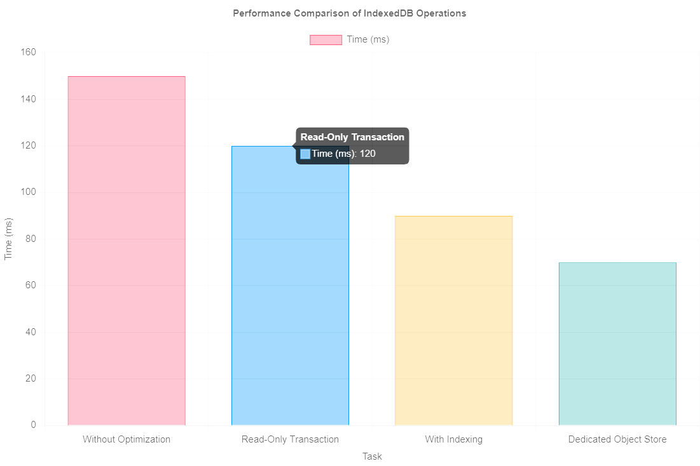

-
"Seven Databases in Seven Weeks: A Guide to Modern Databases and the NoSQL
Movement, 2nd Edition"
by Eric Redmond, and Jim Wilson -
"Fundamentals of Data Engineering"
by Joe Reis and Matt Housley -
"The Dashboard Effect: Transform Your Company"
by Jon Thompson and Brick Thompson
| Week | Topics | Assignment | Database |
|---|---|---|---|
| 1 (Aug 27, 29) | Unstructured and Evolving Data🔗 | Lab 1, HW 1 | IndexedDB |
| 2 (Sep 3, 5) | Data Modeling and Engineering 🔗 | ||
| 3 (Sep 10, 12) | Data Quality and Standards 🔗 | Lab 2, HW 2, Project Part 1: Data and Scalability | MongoDB |
| 4 (Sep 17, 19) | Data Ingestion and Processing 🔗 | ||
| 5 (Sep 24, 26) | Database Architecture 🔗 | Lab 3, HW 3 | Neo4j |
| 6 (Oct 1, 3) | Database Dashboard 🔗 | ||
| 7 (Oct 8, 10) | Database and Data Security 🔗 | Lab 4, HW 4 | Redis |
| 8 (Oct 15, 17) | Midterm Preparation | Midterm | |
| 9 (Oct 22, 24) | Data Lakes, Data Warehouses & Secondary Data Usage 🔗 | ||
| 10 (Oct 29, 31) | Mid-Semester Review | ||
| 11 (Nov 5, 7) | Database Sharding and Partitioninge 🔗 | Lab 5, HW 5, Project Part 2: Data Lake, Warehouse, and Dashboard | |
| 12 (Nov 12, 14) | Database Migration from SQL to NoSQL 🔗 | ClickHouse | |
| 13 (Nov 19, 21) | Course Review | ||
| 14 (Nov 26) | Practice Finals Exam | ||
| 15 (Dec 3, 5) | Project Presenations | ||
| 16 (Dec 10, 12) | Finals Week |
Dec 10, 8:00 am - 11:00 am, Baun Hall 214 Dec 12, 7:00 pm - 10:00 pm, John T Chambers Technology Center 114 |
Syllabus
Textbooks
Office Hours
Monday - Friday from 1:00 PM to 3:00 PM, located at CTC 117
Grading Schema
- Homework: 15%
- Labs: 15%
- Project: 40%
- Midterm Exam: 15%
- Final Exam: 15%
Assignments and Exams
The course includes regular homework assignments, hands-on labs, a comprehensive project, a midterm, and a final exam
Course Assumptions
It is assumed that students have a basic understanding of databases and programming concepts. Familiarity with JavaScript and Python development is recommended
GitHub Repository
The course code and materials will be available on GitHub. Please clone the repository at https://github.com/SE4CPS/dms2.
Collaboration and AI Rules
Collaboration is encouraged on assignments, but all submitted work must be your own. The use of AI tools for generating code or assignments is allowed
Research Opportunities
Students interested in research can expand their course project into a research opportunity, particularly in the areas of NoSQL databases, big data, and data analytics.
Course Goals 1/3
- Data Architect: Learned to examine database technologies for a specific application use case
- Data Engineer: Gained expertise in building data pipelines using NoSQL databases.
- Big Data Specialist: Gained experience in handling and processing large volumes of data using NoSQL technologies
- Database Administrator: Developed skills to manage, monitor, and optimize NoSQL databases
Course Goals 2/3
- Data Quality Specialist: Learned to define and implement data quality requirements.
- Data Scientist: Learned to work with unstructured data in NoSQL databases for advanced analytics
- Data Analyst: Learned to define KPIs and metrics relevant for dashboards
- BI Developer: Learned to integrate NoSQL databases into business intelligence tools for better decision-making
Course Goals 3/3
- Requirement: Effectively interact with domain stakeholders to examine data requirements.
- Strategic: Making architectural database and data decisions
- Operational: Ability to query NoSQL databases for specific requirements
Today
- What changed? Why DMS 2?
- Why is data unstructured and evolving?
- Why IndexedDB the Standard NoSQL Database for the Web?
Data Management Before 2000
- Limited Internet Connectivity: Isolated Systems
- Manual Data Entry: Transition from Paper Tables to SQL Tables
- Static Data Models: Predefined Schemas Before Data Entry
Early 2000s: Data Shift
- Connectivity: Rapid adoption of internet, NFC, BLE, and Wi-Fi;
- Human Data: Surge in real-time, user-generated data
- Machine Data: Cheap transistors fueled machine-generated IoT data
- Mobile: Mobile devices; ubiquitous data access
Connectivity and Automation 🙂
- Healthcare: Medical record systems, telemedicine, and patient monitoring
- Agriculture: Precision farming, automated irrigation, and crop monitoring.
- Automotive: Autonomous driving systems, connected vehicles, and predictive maintenance
Connectivity and Automation 🤔
Connectivity and automation led to increased dependency on complex software systems across industries
Connectivity and Automation 😠
Software continuously updated independently of other dependent components.
Updating Relational Schemas
A consistent data model (SQL) is not realistic in complex software systems
Point of Sale System

A point of sale (POS) database should flexibly handle scanned data, adapting to changes in data structure without data schema update
Reading Data from QR Code

Product v1
{
"productID": "12345",
"name": "T-shirt",
"price": 19.99,
"quantity": 1
}
Product v2
{
"productID": "12345",
"name": "T-shirt",
"price": 19.99,
"quantity": 1,
"color": "Orange",
"size": "M"
}
Scaling Vehicle Log and Sensor Data

Scaling Vehicle Log and Sensor Data
{
"deviceID": "XYZ456",
"logSummary": {
"motionDetected": 145,
"doorOpened": 78,
"windowOpened": 54
},
"sensorReadings": {
"ABC123": {
"temperatureValues": 1200,
"humidityValues": 1150
},
"DEF456": {
"temperatureValues": 950,
"humidityValues": 900
},
"GHI789": {
"temperatureValues": 800,
"humidityValues": 850
}
}
}
Today
- What changed? Why DMS 2?
- Why is data unstructured and evolving?
- Why IndexedDB the Standard NoSQL Database for the Web?
Why is Data Unstructured and Evolving?
Today
- Why DMS 2? What changed?
- Why is data unstructured and evolving?
- Why IndexedDB the Standard NoSQL Database for the Web?
IndexedDB Timeline
- 2010: Introduction of IndexedDB by the W3C as a web standard for storing large unstructured data in the browser
- 2011: First implementations in major browsers, allowing offline web applications to store data locally
- 2014: IndexedDB 2.0 draft published and improve API for better performance.
- 2016: Broad adoption across major browsers, including Edge and Safari, for consistent support for web developers
- 2018: IndexedDB 2.0 officially recommended by the W3C
- 2020s: Ongoing improvements and optimizations
IndexedDB Resources
Prepare for Next Class: Reading
Please read the following material before our next class:
- Philosophy of NoSQL
- A Distributed Storage System for Structured Data (Abstract, Sections 1-2)
- Chapter: What is Data Engineering from "Fundamentals of Data Engineering: Plan and Build Robust Data Systems"
- Course Syllabus
Homework 1: SQL & NoSQL Review
Canvas Due Date: Tuesday, September 10
- Review the architectural differences between relational (SQL) and non-relational (NoSQL) databases
- Analyze the trade-offs between SQL's ACID properties and NoSQL's CAP theorem implications.
Lab 1: Agricultural Data Collection
Canvas Due Date: Tuesday, September 10

Lab 1: Agricultural Data Collection with IndexedDB
In this lab, you will develop a web application that collects and stores unstructured agricultural data using IndexedDB. You will implement functionality to handle various data types, including sensor readings, images, farmer notes, GPS coordinates, and timestamps
Lab 1: Submission Instructions
After completing the lab, follow these steps to submit your work:
- Create a new Git branch named lab1-firstname-lastname-XXXX (e.g., lab1-john-doe-1234).
- Push your code to the repository at https://github.com/SE4CPS/dms2
- Write five unit test functions to validate your data and include a screenshot of your browser console showing the retrieved data
- Submit the GitHub link and screenshot via the course's submission portal
Today
- Unstructured data
- IndexedDB Part 2
- Code Lab
Unstructured Data
- Data structure updates before table structure updates ✓
- Data values that cannot be structured in RDBS tables
Unstructured Data
Logs, Images, Videos, Text documents, Sensor data
Video Data
Video Data Sample:
--------------------
Frame 1:
[[34, 45, 56], [78, 89, 90], [23, 45, 67], ...]
Frame 2:
[[65, 75, 85], [123, 132, 140], [90, 100, 110], ...]
Frame 3:
[[12, 22, 32], [45, 50, 55], [34, 39, 43], ...]
...
Audio Data
Audio Data Sample (Waveform):
--------------------
[0.1, 0.3, -0.2, 0.5, -0.4, 0.8, -0.7, ...]
[0.2, 0.4, -0.3, 0.6, -0.5, 0.9, -0.8, ...]
...
Text Data
Text Data Sample:
--------------------
"The quick brown fox jumps over the lazy dog.
This sentence contains every letter of the alphabet."
"Data science is an interdisciplinary field that uses scientific methods,
processes, algorithms, and systems to extract knowledge from data."
Email Data
| Store | Entries |
|---|---|
|
Log Data
Log Data Sample:
--------------------
2024-08-28 12:45:23 INFO: User logged in - UserID: 12345
2024-08-28 13:02:10 WARNING: High memory usage detected
2024-08-28 14:15:45 ERROR: Unable to connect to the database
...
Logs Data Stores
| Store | Entries |
|---|---|
| Logs |
|
What is structured data?
- Data stored as free-form text, such as emails or social media posts
- Data organized in a predefined format, such as tables and columns
- Data generated by sensors, such as temperature readings
Which is unstructured data?
- A relational database storing customer information
- A JSON document representing a user profile
- A collection of log files generated by a web server
Which data is stored in NoSQL DBs?
- Tabular data in SQL databases
- Key-value pairs or document-based data like JSON
- Structured data with strict schema enforcement
Why unstructured data complex to manage?
- It requires a predefined schema before storage
- It lacks a predefined structure, making it harder to organize and query
- It is always stored in text files
Unstructured vs structured?
- 50% unstructured, 50% structured
- 80% unstructured, 20% structured
- 30% unstructured, 70% structured
- Data structure updates before table structure updates ✓
- Data values that cannot be structured in RDBMS tables ✓

Today
- Unstructured data ✓
- IndexedDB Part 2
- Code Lab
Why IndexedDB?
- Performance
- Comprehensive API
- ACID Compliance
Performance via Asynchronous API

Performance via Asynchronous API
- Non-blocking operations keep the UI responsive
- Allows multiple requests to run simultaneously
- Prevents the browser from freezing during large data operations
let request = indexedDB.open("BookStoreDB", 1);
request.onsuccess = function(event) {
let db = event.target.result;
let transaction = db.transaction("Books", "readwrite");
let store = transaction.objectStore("Books");
store.add({ title: "JavaScript Basics", author: "John Doe" });
};
console.log("next Instruction...");
Performance via Asynchronous API
- Improves performance for data-intensive applications
- Enables smooth user experience without lag
- Handles large datasets effectively
Fetching all books in the background while the user continues browsing
let transaction = db.transaction("Books", "readonly");
let store = transaction.objectStore("Books");
let request = store.getAll();
request.onsuccess = function(event) {
console.log(event.target.result);
};
console.log("next Instruction...");
Performance via Indexing
- Fast data retrieval by creating indexes on frequently queried fields
- Reduces the time complexity of search operations
- Improves performance when dealing with large datasets
let request = indexedDB.open("BookStoreDB", 1);
request.onupgradeneeded = function(event) {
let db = event.target.result;
let store = db.createObjectStore("Books", { keyPath: "id", autoIncrement: true });
store.createIndex("authorIndex", "author", { unique: false });
};
Performance via Indexing
- Fast retrieve all books by a specific author
- Efficiently search and filter data
- Minimizes the overhead of scanning the entire database
let transaction = db.transaction("Books", "readonly");
let store = transaction.objectStore("Books");
let index = store.index("authorIndex");
let request = index.getAll("John Doe");
request.onsuccess = function(event) {
console.log(event.target.result);
};
Performance via Parallel Reads
let transaction = db.transaction("Books", "readonly");
let store = transaction.objectStore("Books");
let request1 = store.get(1);
let request2 = store.get(2);
request1.onsuccess = function(event) {
console.log("Book 1:", event.target.result);
};
request2.onsuccess = function(event) {
console.log("Book 2:", event.target.result);
};
Performance via No Schema Verification
- Faster data storage and retrieval as no schema validation is required
- Less overhead, especially for large datasets or frequently updated data
Why IndexedDB?
- Performance ✓
- Comprehensive API
- ACID Compliance
Comprehensive API (1/4)
| SQL Query | IndexedDB API |
|---|---|
| CREATE TABLE Books (id INT, title TEXT, author TEXT); | db.createObjectStore("Books", { keyPath: "id", autoIncrement: true }); |
| INSERT INTO Books (title, author) VALUES ('Book Title', 'Author'); | store.add({ title: 'Book Title', author: 'Author' }); |
| SELECT * FROM Books; | store.getAll(); |
| SELECT * FROM Books WHERE id = 1; | store.get(1); |
Comprehensive API (2/4)
| SQL Query | IndexedDB API |
|---|---|
| UPDATE Books SET author = 'New Author' WHERE id = 1; | let record = store.get(1); record.author = 'New Author'; store.put(record); |
| DELETE FROM Books WHERE id = 1; | store.delete(1); |
| CREATE INDEX ON Books (author); | store.createIndex("authorIndex", "author", { unique: false }); |
| SELECT * FROM Books WHERE author = 'Author'; | let index = store.index("authorIndex"); index.getAll("Author"); |
Comprehensive API (3/4)
| SQL Query | IndexedDB API |
|---|---|
| SELECT COUNT(*) FROM Books; | store.count(); |
| DELETE FROM Books; | store.clear(); |
| DROP TABLE Books; | db.deleteObjectStore("Books"); |
| ALTER TABLE Books ADD COLUMN published_date DATE; | No direct equivalent; modify existing records to add new field |
Comprehensive API (4/4)
| SQL Query | IndexedDB API |
|---|---|
| BEGIN TRANSACTION; | let transaction = db.transaction(["Books"], "readwrite"); |
| COMMIT; | transaction.oncomplete = function() { ... } |
| ROLLBACK; | transaction.abort(); |
| SELECT * FROM Books ORDER BY title; | let cursor = store.openCursor(); cursor.continue(); |
| ERROR HANDLING; | transaction.onerror = function(event) { console.error(event.target.errorCode); }; |
Limitations in IndexedDB API
- JOIN operations across multiple object stores
- Aggregations like SUM, AVG, MIN, MAX
- Complex WHERE clauses with AND, OR, NOT
- Subqueries (e.g., SELECT * FROM (SELECT ...))
- GROUP BY and HAVING clauses
- ALTER TABLE to modify schema after creation
- Full-text search within fields
- Triggers and stored procedures
Why IndexedDB?
- Performance ✓
- Comprehensive API ✓
- ACID Compliance
ACID Compliance of IndexedDB
| ACID Property | IndexedDB Compliance |
|---|---|
| Atomicity | Supported. Transactions are atomic, meaning all operations within a transaction are completed successfully, or none are applied. If an error occurs, the transaction can be aborted |
| Consistency | Partially. While IndexedDB does not enforce a schema, it maintains consistency within the data by ensuring that transactions either fully succeed or fail, preventing partial updates |
| Isolation | Partial. Transactions are isolated to an extent, meaning data changes in a transaction are not visible to other transactions until the transaction is complete. However, there is no strict locking mechanism as in traditional RDBMS |
| Durability | Supported. Once a transaction is committed, the data is guaranteed to be saved, even if the system crashes immediately afterward. Data is stored persistently in the browser |
Why IndexedDB?
- Performance ✓
- Comprehensive API ✓
- ACID Compliance ✓
Today
- Unstructured data ✓
- IndexedDB Part 2 ✓
- Code Lab
Code Lab
DocsToday
- Unstructured data ✓
- IndexedDB Part 2 ✓
- Code Lab ✓
Reminder
Please review the syllabus, homework, lab, and reading list
Data Modeling and Engineering
Today
- Data Modeling
- Data Engineering
- Questions Assignment 1
- Glossary and Terminology
Which of the following statements is true about IndexedDB?
- A) IndexedDB is a NoSQL database built into the browser, allowing for storage of significant amounts of structured data
- B) IndexedDB does not support transactions, making it unsuitable for complex operations.
- C) IndexedDB only supports string data types and cannot store objects
- D) IndexedDB can only be used in server-side applications and not in the browser
Which code snippets creates an object store in IndexedDB?
A)
var request = indexedDB.open('MyDatabase', 1);
request.onupgradeneeded = function(event) { // when created or updated
var db = event.target.result;
db.createObjectStore('MyObjectStore', { keyPath: 'id' });
};
B)
var db = new IndexedDB('MyDatabase');
db.createStore('MyObjectStore', 'id');
What happens if a database is created twice in IndexedDB with the same name but different version numbers?
A) The database is re-created and any existing data is overwritten
B) The database is ignored and no changes are made
C) The database is upgraded, and the
onupgradeneeded event is triggered.
D) The database is deleted and recreated from scratch.
What happens if a database is created twice in IndexedDB with the same name and the same version number?
A) The database is re-created and any existing data is overwritten
B) The database is ignored and no changes are made
C) The database is upgraded, and the
onupgradeneeded event is triggered.
D) The database is deleted and recreated from scratch.
Data Modeling: SQL vs. NoSQL
- SQL: Structured schemas with tables, rows, and columns
- NoSQL: Flexible schema with key-value pairs for quick lookups
Data Modeling: SQL vs. NoSQL
- SQL: Models relationships between entities
- NoSQL: Models relationships within a single entity
SQL Example: Crops Data
-- Create table for crops and farms
CREATE TABLE Crops (
CropID INT PRIMARY KEY,
CropName VARCHAR(50),
PlantingDate DATE,
HarvestDate DATE,
FarmID INT
);
-- Insert crop data
INSERT INTO Crops VALUES
(1, 'Wheat', '2024-03-15', '2024-08-10', 1),
(2, 'Corn', '2024-04-01', '2024-09-15', 2);
NoSQL Example: Crops Data
{
"Farm:1": {
"Crops": [
{"CropID": "1", "CropName": "Wheat", "PlantingDate": "2024-03-15"}
]
},
"Farm:2": {
"Crops": [
{"CropID": "2", "CropName": "Corn", "PlantingDate": "2024-04-01"}
]
}
}
NoSQL Example: Real-Time Sensor Data
{
"Sensor:101": {
"Type": "Soil Moisture",
"Location": "Field A",
"LastReading": "2024-09-02T12:30Z",
"Value": "35%"
}
}
Querying Data
SQL Querying
SQL databases use a structured query language (SQL) for complex queries, enabling
powerful filtering, joining, and aggregation capabilities
Process:
- SQL Query → Returns Structured Data
NoSQL Querying
NoSQL databases use flexible key-based lookups and simple filtering. Queries
typically
return JSON values and may require additional processing with JavaScript
Process:
- NoSQL Query → Returns JSON Data
- JavaScript Query → Additional Processing
- Result → Processed Data Output
⚠️ Warning: The schema of the JSON data must be known for accurate
processing and aggregation. Since NoSQL schemas are flexible and not enforced,
ensure
proper schema knowledge for consistent data handling.
SQL Querying
SQL databases use a structured query language (SQL) for complex queries, enabling powerful filtering, joining, and aggregation capabilities
Process:
- SQL Query → Returns Structured Data
NoSQL Querying
NoSQL databases use flexible key-based lookups and simple filtering. Queries typically return JSON values and may require additional processing with JavaScript
Process:
- NoSQL Query → Returns JSON Data
- JavaScript Query → Additional Processing
- Result → Processed Data Output
⚠️ Warning: The schema of the JSON data must be known for accurate processing and aggregation. Since NoSQL schemas are flexible and not enforced, ensure proper schema knowledge for consistent data handling.
SQL vs. NoSQL Data Structures
SQL Query & Aggregation
-- Sample SQL Query
SELECT CropName, PlantingDate, HarvestDate
FROM Crops
WHERE FarmID = 1;
-- Average Harvest Duration Calculation
SELECT AVG(DATEDIFF(DAY, PlantingDate, HarvestDate)) AS AvgHarvestDays
FROM Crops
WHERE FarmID = 1;
Structured query language (SQL) allows direct querying and aggregation, such as
calculating averages
NoSQL Query & Aggregation
// JavaScript to query IndexedDB and calculate average harvest days
let db; // Assume `db` is an open IndexedDB instance
// Query to get data from IndexedDB
let transaction = db.transaction(['Crops'], 'readonly');
let objectStore = transaction.objectStore('Crops');
let request = objectStore.getAll();
request.onsuccess = function(event) {
let crops = event.target.result;
// Example of processing data to calculate average harvest days
let totalHarvestDays = crops.reduce((sum, crop) => {
let plantingDate = new Date(crop.PlantingDate);
let harvestDate = new Date(crop.HarvestDate);
let days = (harvestDate - plantingDate) / (1000 * 60 * 60 * 24);
return sum + days;
}, 0);
let avgHarvestDays = totalHarvestDays / crops.length;
console.log('Average Harvest Days:', avgHarvestDays);
};
NoSQL querying returns JSON data, which can be processed with JavaScript for
aggregations
such as average calculations
SQL Query & Aggregation
-- Sample SQL Query
SELECT CropName, PlantingDate, HarvestDate
FROM Crops
WHERE FarmID = 1;
-- Average Harvest Duration Calculation
SELECT AVG(DATEDIFF(DAY, PlantingDate, HarvestDate)) AS AvgHarvestDays
FROM Crops
WHERE FarmID = 1;
Structured query language (SQL) allows direct querying and aggregation, such as calculating averages
NoSQL Query & Aggregation
// JavaScript to query IndexedDB and calculate average harvest days
let db; // Assume `db` is an open IndexedDB instance
// Query to get data from IndexedDB
let transaction = db.transaction(['Crops'], 'readonly');
let objectStore = transaction.objectStore('Crops');
let request = objectStore.getAll();
request.onsuccess = function(event) {
let crops = event.target.result;
// Example of processing data to calculate average harvest days
let totalHarvestDays = crops.reduce((sum, crop) => {
let plantingDate = new Date(crop.PlantingDate);
let harvestDate = new Date(crop.HarvestDate);
let days = (harvestDate - plantingDate) / (1000 * 60 * 60 * 24);
return sum + days;
}, 0);
let avgHarvestDays = totalHarvestDays / crops.length;
console.log('Average Harvest Days:', avgHarvestDays);
};
NoSQL querying returns JSON data, which can be processed with JavaScript for aggregations such as average calculations
NoSQL JSON Structure and Schema Considerations
NoSQL JSON: Crops
{
"Farm:1": {
"Crops": [
{"CropID": "1", "CropName": "Wheat", "PlantingDate": "2024-03-15", "HarvestDate": "2024-08-10"}
]
},
"Farm:2": {
"Crops": [
{"CropID": "2", "CropName": "Corn", "PlantingDate": "2024-04-01", "HarvestDate": "2024-09-15"}
]
}
}
Flexible data structure using nested key-value pairs. The schema can vary between
documents
and might not be uniform
⚠️ Important: To ensure accurate processing and aggregation, it's
crucial
to know the schema of the JSON data. In NoSQL, since the schema is not enforced, you
must
understand and manage it at the application level to maintain consistency and
correctness in
data handling.
NoSQL JSON: Crops
{
"Farm:1": {
"Crops": [
{"CropID": "1", "CropName": "Wheat", "PlantingDate": "2024-03-15", "HarvestDate": "2024-08-10"}
]
},
"Farm:2": {
"Crops": [
{"CropID": "2", "CropName": "Corn", "PlantingDate": "2024-04-01", "HarvestDate": "2024-09-15"}
]
}
}
Flexible data structure using nested key-value pairs. The schema can vary between documents and might not be uniform
⚠️ Important: To ensure accurate processing and aggregation, it's crucial to know the schema of the JSON data. In NoSQL, since the schema is not enforced, you must understand and manage it at the application level to maintain consistency and correctness in data handling.
Evaluating NoSQL Data Modeling
Pros
- Flexible Schema: Allows for varying structures and rapid schema
changes
- Nested Data: Can model complex hierarchical relationships
within a
single document
- Efficient Reads: Reduces the need for joins by storing related
data
together
- Scalability: Easily scales horizontally to handle large volumes
of
data
Cons
- Complex Queries: Nested structures can make querying and data
manipulation more complex
- Data Duplication: May lead to data duplication if not managed
properly
- Performance Issues: Large and deeply nested documents can
impact
performance
- Inconsistent Structure: Variability in document structure can
lead
to data inconsistency
Pros
- Flexible Schema: Allows for varying structures and rapid schema changes
- Nested Data: Can model complex hierarchical relationships within a single document
- Efficient Reads: Reduces the need for joins by storing related data together
- Scalability: Easily scales horizontally to handle large volumes of data
Cons
- Complex Queries: Nested structures can make querying and data manipulation more complex
- Data Duplication: May lead to data duplication if not managed properly
- Performance Issues: Large and deeply nested documents can impact performance
- Inconsistent Structure: Variability in document structure can lead to data inconsistency
Case Study I - Precision Farming Database
Requirements Overview
- Sensor Data: Real-time, high volume. Data from IoT sensors monitoring soil moisture, temperature, and humidity, requiring efficient processing and storage
- Weather Data: Data from APIs. External weather data including rainfall, temperature, and wind speed, crucial for predictive analysis and decision-making
- Drone Imagery: High-resolution images & videos. Large files from drones used for crop health monitoring, demanding robust storage solutions
- Farm Management Data: Information on crop types, planting schedules, and irrigation plans, essential for managing daily operations
Which type of database (SQL or NoSQL/IndexedDB) would you recommend for each requirement, and why?
Today
- Data Modeling ✓
- Data Engineering
- Questions Assignment 1
- Glossary and Terminology
What is Data Engineering?
- Data Collection and Ingestion
- Data Transformation and Cleaning
- Data Storage and Management
- Data Pipeline Development
- Data Security and Governance
- Data Versioning
- Data Maintenance
- Data Archiving
Integration of Software Engineering with Data Engineering
How can principles of software engineering be integrated with data engineering practices to improve the reliability, scalability, and maintainability of data-driven systems in agriculture?
{
"field_id": "North_Section",
"average_soil_moisture": "30%",
"average_temperature": "19°C",
"average_humidity": "62%",
"time_period": "2024-09-01 to 2024-09-07"
}
At which stage of the data hierarchy does this aggregated data belong?
Today
- Data Modeling ✓
- Data Engineering ✓
- Questions Assignment 1
- Glossary and Terminology
How to store assets?
| Image Stored as URL | Image Stored as Blob |
|---|---|
http://example.com/image.jpg
|
47 49 46 38 39 61
(Example of binary data) |
How to store assets?
| Store Image by URL | Store Image as Blob |
|---|---|
|
|
Storing Images in IndexedDB
Auto-Incrementing Entries in IndexedDB
// Open IndexedDB and set up auto-increment
const request = indexedDB.open("LibraryDB", 1);
request.onupgradeneeded = function(e) {
let db = e.target.result;
if (!db.objectStoreNames.contains("books")) {
db.createObjectStore("books", { keyPath: "id", autoIncrement: true });
}
};
request.onsuccess = function(e) {
let db = e.target.result;
let tx = db.transaction("books", "readwrite");
let store = tx.objectStore("books");
store.add({ title: "Sample Book", author: "Author", timestamp: new Date() });
tx.oncomplete = () => console.log("Book added on refresh.");
};
request.onerror = function(e) {
console.error("Error", e.target.errorCode);
};
Each browser refresh adds a new book entry with auto-incremented ID
Limitated Aggregates in IndexedDB
- Data types can vary, complicating aggregates like sum or average
- Data is accessed primarily by keys, not suiting full data set scans
Today
- Data Modeling ✓
- Data Engineering ✓
- Questions Assignment 1 ✓
- Glossary and Terminology
Today
- Data Modeling ✓
- Data Engineering ✓
- Questions Assignment 1 ✓
- Glossary and Terminology ✓
Today
- Data Modeling Part 2
- Data Engineering Part 2
- Assignment Review
- Roster Verification
Modeling JSON Documents Data
- Is the JSON structure valid?
- Is the JSON schema validation in place? (next week)
- Are values validated correctly? (next week)
Is the JSON structure valid?

JSON Object Structure
{}
JSON Object Structure
{
"name1": "value1",
"name2": "value2"
}
Is the JSON structure valid?

JSON Array Structure
[
"value1",
"value2",
"value3"
]

JSON String Structure
{
"name": "John Doe",
"greeting": "Hello, world",
"city": "Stockton",
"language": "JavaScript",
"quote": "He said, \"Hello!\"",
"hexExample": "\u0048\u0065\u006C\u006C\u006F", // "Hello" in hexadecimal
"withTab": "Line1\tLine2" // Tab between two lines
}
JSON Number Structure
{
"integer": 42,
"negative": -99,
"float": 3.14159,
"exponential": 1.23e4 // Equivalent to 12300
}How do we validate the data model is correctly structured?
Is this a valid JSON structure?
{
"name": "John",
"age": 30
"city": "New York"
}Is this a valid JSON structure?
{
"name": "Jane",
"age": 25,
"city": "Los Angeles",
}
Is this a valid JSON structure?
{
'name': 'Mike',
'age': 40,
'city': 'Chicago'
}How do we automatically validate the data model is correctly structured?
function isJSONValid(jsonString) {
try {
JSON.parse(jsonString);
return true;
} catch (e) {
return false;
}
}
const jsonString = '{"name": "John", "age": 30}';
if (isJSONValid(jsonString)) {
console.log("Valid JSON");
} else {
console.log("Invalid JSON");
}
Modeling JSON Documents Data
- Is the JSON structure valid?
- Is the JSON schema validation in place? (next week)
- Are values validated correctly? (next week)
How to Model Primary Key / ID?
Modeling JSON Object Keys Options
- Custom Key: Manually assign a meaningful key (e.g., "userID")
- Auto-Incrementing: Sequentially increasing number as a key
- Universally Unique Identifier (UUID): Generate a unique key
Modeling JSON Object Keys via UUID
UUIDs ensures unique identification / avoid collisions
function generateUUID() {
return crypto.randomUUID();
}
const jsonObject = {
[generateUUID()]: {
"name": "John Doe",
"age": 30
}
};
How UUIDs Are Generated?
- Random numbers
- Timestamps
- Unique identifiers (e.g., MAC address)
UUID (Universally Unique Identifier) is a 128-bit number generated. UUIDs are designed to be globally unique across space and time, with a very low probability of duplication

Agriculture JSON Object Example
{
"uuid": "3f5e1fbe-9c4f-4d7f-b8fa-9b5aef02e573",
"crop": "Wheat",
"farmLocation": "North Field",
"yield": 3000,
"unit": "kg",
"harvestDate": "2024-09-04"
}
Case Study II - Library Management System
Requirements Overview
- Book Inventory: Cataloging information including ISBN, title, author, genre, and availability status, crucial for managing book lending and returns
- Member Records: Detailed information on library members, such as name, contact details, membership type, and borrowing history, requiring secure and organized storage
- Transaction Logs: High volume. Records of book checkouts, returns, and fines, which need to be tracked efficiently over time for auditing purposes
- Digital Media: Storage of e-books, audiobooks, and digital magazines, requiring flexible storage solutions to handle various formats and sizes.
Which type of database (SQL or NoSQL/IndexedDB) would you recommend for each requirement, and why?
Today
- Data Modeling Part 2 ✓
- Data Engineering Part 2
- Assignment Review
- Roster Verification
When verifying data model?
Data Model Verification
Always verify the data model before reading or writing to:
- Ensure consistency
- Maintain data integrity
- Prevent errors

What is tranformation?
Map - Filter - Reduce
Library: Map Example
Map: Convert the list of books to show only titles
const books = [
{ uuid: "a1b2c3d4-5678-9abc-def0-1234567890ab", title: "Book A", author: "Author 1", pages: 200, isbn: "978-3-16-148410-0" },
{ uuid: "e5f6g7h8-9101-1jkl-mnop-0987654321cd", title: "Book B", author: "Author 2", pages: 150, isbn: "978-1-23-456789-7" },
{ uuid: "i9j1k2l3-qrst-4567-uvwx-2345678901yz", title: "Book C", author: "Author 3", pages: 300, isbn: "978-0-12-345678-9" }
];
const titles = books.map(book => book.title);
console.log(titles); // ["Book A", "Book B", "Book C"]
Library: Filter Example
Filter: Show books with more than 200 pages
const books = [
{ uuid: "a1b2c3d4-5678-9abc-def0-1234567890ab", title: "Book A", author: "Author 1", pages: 200, isbn: "978-3-16-148410-0" },
{ uuid: "e5f6g7h8-9101-1jkl-mnop-0987654321cd", title: "Book B", author: "Author 2", pages: 150, isbn: "978-1-23-456789-7" },
{ uuid: "i9j1k2l3-qrst-4567-uvwx-2345678901yz", title: "Book C", author: "Author 3", pages: 300, isbn: "978-0-12-345678-9" }
];
const largeBooks = books.filter(book => book.pages > 200);
console.log(largeBooks);
// [{ uuid: "i9j1k2l3-qrst-4567-uvwx-2345678901yz", title: "Book C", author: "Author 3", pages: 300, isbn: "978-0-12-345678-9" }]
Library: Reduce Example
Reduce: Calculate the total number of pages
const books = [
{ uuid: "a1b2c3d4-5678-9abc-def0-1234567890ab", title: "Book A", author: "Author 1", pages: 200, isbn: "978-3-16-148410-0", stock: "Available" },
{ uuid: "e5f6g7h8-9101-1jkl-mnop-0987654321cd", title: "Book B", author: "Author 2", pages: 150, isbn: "978-1-23-456789-7", stock: "Out of Stock" },
{ uuid: "i9j1k2l3-qrst-4567-uvwx-2345678901yz", title: "Book C", author: "Author 3", pages: 300, isbn: "978-0-12-345678-9", stock: "Available" }
];
const totalPages = books.reduce((sum, book) => sum + book.pages, 0);
console.log(totalPages); // 650
Review Data Modeling and Engineering
Today
- Data Modeling Part 2 ✓
- Data Engineering Part 2 ✓
- Assignment Review
- Roster Verification
Arrange: Set Up the Test Data
// Arrange
const sensorId = 'sensor123';
const expected = {
id: 'sensor123',
temperature: 24.5,
humidity: 78,
soilMoisture: 30
};
Act: Execute the Function
// Act
const result = getSensorData(sensorId);
Assert: Verify the Results
// Assert
console.assert(result.id === sensorId,
'Test failed: Sensor ID does not match.');
console.assert(result.temperature >= 0 && result.temperature <= 50,
'Test failed: Temperature is out of the range (0-50°C).');
console.assert(result.humidity >= 0 && result.humidity <= 100,
'Test failed: Humidity is out of the range (0-100%).');
console.assert(result.soilMoisture >= 0 && result.soilMoisture <= 100,
'Test failed: Soil moisture is out of the range (0-100%).');
Today
- Data Modeling Part 2 ✓
- Data Engineering Part 2 ✓
- Assignment Review ✓
- Roster Verification
Reminder
Please review the syllabus, homework, lab, and reading list
Data Quality and Standards
Today
- Why Data Quality?
- Definition of Data Quality
- Implementation of Data Quality
- Introduction MongoDB
- Project Part 1, Homework 2, Lab 2


Definition of Data Quality
- Integrity: Data maintains accuracy and consistency
- Validity: Data adheres to established formats and rules
- Consistency: Data is consistent across datasets
- Accuracy: Data correctly reflects real-world conditions
- Completeness: All necessary data is included; essential for analysis
- Timeliness: Data is available when needed; current conditions
- Uniqueness: No unnecessary duplicates; each entry is distinct
Definition of Data Quality
- Healthcare: Compliance with HIPAA for data privacy, accuracy in patient records
- Automotive: Compliance with ISO/TS 16949 for quality and safety standards
- Manufacturing: Conformity with ISO 9001 for quality management systems
- Retail: Compliance with PCI DSS for payment data security, accuracy in inventory data
Implementing Data Integrity
Data Tampering
Data tampering involves unauthorized alterations or manipulations of data, potentially compromising its integrity during transmission or storage.| Original JSON | Tampered JSON |
|---|---|
|
|
Verification Data Integrity

{
"patientRecord": {
"uuid": "123e4567-e89b-12d3-a456-426614174000",
"clinicalRecord": {
"patientName": "John Doe",
"diagnosisCode": "E11.9",
},
"metadata": {
"patientRecordChecksum": "79e1ed3dc3250d3a9cc80f9ab...",
"author": "Dr. Jane Smith",
}
}
}async function createChecksum(data) {
const dataAsBytes = new TextEncoder().encode(data);
const hashBuffer = await crypto.subtle.digest('SHA-256', dataAsBytes);
const hashHex = Array.from(new Uint8Array(hashBuffer))
.map(byte => byte.toString(16).padStart(2, '0'))
.join('');
return hashHex;
}
// Example usage:
createChecksum('patientRecord').then(checksum => console.log('Checksum:', checksum));import hashlib
def create_checksum(data):
# Convert data to bytes
data_as_bytes = data.encode('utf-8')
# Create SHA-256 hash
hash_object = hashlib.sha256(data_as_bytes)
# Convert hash to hexadecimal format
hash_hex = hash_object.hexdigest()
return hash_hex
# Example usage
checksum = create_checksum('patientRecord')
print('Checksum:', checksum)
What if data is lost in transit?
HTTPS, Bluetooth, Wi-Fi (802.11), Ethernet (IEEE 802.3), Cellular Networks (3G, 4G, 5G), Satellite CommunicationEarly Build Data Quality Visibility

Definition of Data Quality
- Integrity: Data maintains accuracy and consistency ✓
- Validity: Data adheres to established formats and rules
- Consistency: Data is consistent across datasets
- Accuracy: Data correctly reflects real-world conditions
- Completeness: All necessary data is included; essential for analysis
- Timeliness: Data is available when needed; current conditions
- Uniqueness: No unnecessary duplicates; each entry is distinct
Verify Valid Format, Range, Type, and Value
{
"patientRecord": {
"uuid": "123e4567-e89b-12d3...", // Format: UUID
"clinicalRecord": {
"patientName": "John Doe", // Type: String, Value: Non-empty
"diagnosisCode": "E11.9" // Format: ICD-10 Code, Value: Valid code
},
"metadata": {
"createdTimestamp": "2024-09-08T12:34:56Z", // Format: ISO 8601, Value: Valid timestamp
"patientRecordChecksum": "79e1ed3dc3250...", // Type: String (SHA-256), Value: Correct hash
"author": "Dr. Jane Smith" // Type: String, Value: Valid name
}
}
}
SQL Database
What mechanism does SQL offer to achieve data integrity?Format and Type Validation
- Format Validation:
- UUID: Use regular expressions to ensure it follows the UUID format
- Timestamp: Use regular expressions to verify ISO 8601 format
- Type Validation:
- Name: Ensure it's a string and non-empty
- Diagnosis Code: Verify that it's a valid code
- Author: Check that it's a string and non-empty
Range and Value Validation
- Range Validation:
- Temperature: Verify the value falls within a realistic range, e.g., -50°C to 50°C.
- Date: Check that the date is within a valid range, e.g., not in the future
- Value Validation:
- Diagnosis Code: Ensure it is a valid and recognized code (e.g., ICD-10)
- Status: Check if the status is one of the allowed values (e.g., "active", "inactive")
- Quantity: Verify that the value is a positive number and meets expected criteria (e.g., greater than 0)
Definition of Data Quality
- Integrity: Data maintains accuracy and consistency ✓
- Validity: Data adheres to established formats and rules ✓
- Consistency: Data is consistent across datasets
- Accuracy: Data correctly reflects real-world conditions
- Completeness: All necessary data is included; essential for analysis
- Timeliness: Data is available when needed; current conditions
- Uniqueness: No unnecessary duplicates; each entry is distinct
Often, 5% of live data is used for development and testing purposes. What do you recommend?

When would You recommend to hire a data quality engineer?

Case Study: Bike Store Data Quality
Data Quality Requirements Overview
- Accuracy: Ensure product descriptions, pricing, and inventory levels are correct to prevent sales issues and customer dissatisfaction
- Completeness: All product listings should have complete information including specifications, availability, and compatible accessories
- Consistency: Data should be consistent across all platforms (online store, in-shop digital systems, mobile apps) to prevent confusion and errors
- Timeliness: Stock updates and promotional information should be updated in real-time to reflect current availability and offers
- Reliability: Order history and customer data must be reliable for effective CRM and marketing strategies
What strategies and technologies would you recommend to meet these data quality requirements?
Reading Material
Today
- Why Data Quality? ✓
- Definition of Data Quality ✓
- Implementation of Data Quality ✓
- Introduction MongoDB
- Project Part 1, Homework 2, Lab 2
Introduction MongoDB

Reference (2020): MongoDB: Consistent Enterprise Market Share Gains
- 2007: MongoDB development begins at 10gen
- 2009: Released as open-source document database
- 2010: Commercial support options introduced
- 2013: 10gen rebrands to MongoDB, Inc
- 2014: WiredTiger storage engine introduced
- 2016: Launch of MongoDB Atlas cloud service
- 2017: MongoDB goes public on NASDAQ
- 2019: Release of MongoDB 4.2 with advanced features
- 2021: Introduction of MongoDB 5.0, expanding use cases
- Document-Oriented: JSON-like document storage
- Dynamic Schemas: No predefined schema required
- Scalability: Easy scaling through sharding
- Replication: Automatic replication for high availability
- Indexing: Comprehensive indexing options
- Aggregation Framework: In-database data processing
- Ad Hoc Queries: Supports rich query operations
- Storage Engines: Multiple options like WiredTiger
- ACID Transactions: Multi-document transaction support
Database Terminology
| Concept | MongoDB | IndexedDB | SQL |
|---|---|---|---|
| Table/Collection | Collection | Object Store | Table |
| Row/Record | Document | Record | Row |
| Column/Field | Field | Key/Value | Column |
| Query/Search | Query | Transaction/Request | Query |
Create Collection in MongoDB
To create a collection named todos:
db.createCollection("todos")Create Operation in MongoDB
Insert a new document into the todos collection:
db.todos.insert({ task: "Learn MongoDB", status: "In Progress" })Read Operation in MongoDB
Find documents with status "In Progress" in the todos collection:
db.todos.find({ status: "In Progress" })Update Operation in MongoDB
Update a document in the todos collection:
db.todos.update({ task: "Learn MongoDB" }, { $set: { status: "Completed" } })Delete Operation in MongoDB
Remove a document from the todos collection:
db.todos.remove({ task: "Learn MongoDB" })Case Study: Travel Agency Database
Requirements Overview
- Booking Data: High transaction rates with reservations, cancellations, and updates
- Customer Profiles: Rich customer data including preferences, booking history, and loyalty program information
- Travel Inventory: Diverse data from multiple sources, including flights, hotels, and tours, requiring flexible schema and fast querying
- Multi-User Access: Access control to manage different levels of user permissions for staff and management
Which type of database (SQL, IndexedDB, or MongoDB) would you recommend for each requirement, and why?
Please Install MongoDB
Today
- Why Data Quality? ✓
- Definition of Data Quality ✓
- Implementation of Data Quality ✓
- Introduction MongoDB ✓
- Project Part 1, Homework 2, Lab 2
Project Part 1: Motivation
Simulate working with large data sets to explore performance optimization in NoSQL databases. Techniques include read-only flags, indexing, and dedicated object stores
Using a "Todo List" domain, this project improves data query performance and teamwork skills. Alternate domains may be used, provided they maintain the same 'todo' object structure
Project Part 1: Implementation
- Create "TodoList" IndexedDB store with 100,000 objects; display on the browser
- Assign 'completed' status to 1,000 objects, others to 'in progress'
- Time and display the reading of all 'completed' status objects
- Apply a read-only flag, remeasure read time for 'completed' tasks
- Index the 'status' field, time read operations for 'completed' tasks
- Establish "TodoListCompleted" store, move all completed tasks, and time reads
Documentation at MDN Web Docs
Project Part 1: Delivery
- List team members with IDs
- Provide screenshots for tasks 1 to 6
- Share lessons and insights from the project
- Include screenshot of GitHub branch submission (e.g., project_1_team_1)
Upload one PDF with all project details (e.g., project_1_team_1.pdf)
Project Publishing Opportunity
International Conference on Emerging Data and Industry (EDI40)
Lab 2
- Data Modeling
- Data Transformation
- Data Integrity Verification
- Data Validity Verification
Homework 2
- IndexedDB Performance
- IndexedDB Aggregation
- IndexedDB ACID
- Weather Data Requirements
Today
- Why Data Quality? ✓
- Definition of Data Quality ✓
- Implementation of Data Quality ✓
- Introduction MongoDB ✓
- Project Part 1, Homework 2, Lab 2 ✓
Today
- Syllabus Update
- Definition of Data Quality
- Implementation of Data Quality
Syllabus Update
TA Chentankumar Patil (c_patil@u.pacific.edu)
TA Suhasi Miteshkumar Daftary (s_daftary@u.pacific.edu)
Definition of Data Quality
- Integrity: Data maintains accuracy and consistency ✓
- Validity: Data adheres to established formats and rules ✓
- Consistency: Data is consistent across datasets
- Accuracy: Data correctly reflects real-world conditions
- Completeness: All necessary data is included; essential for analysis
- Timeliness: Data is available when needed; current conditions
- Uniqueness: No unnecessary duplicates; each entry is distinct
Data Quality and Consistency
Data is uniform across the database(s), collection(s), and document(s)How to Maintain Data Consistency?
One database, collection, document, field per value
realistic for distributed databases?
CAP Theorem 🤔
Data Quality and Accuracy
Data correctly reflects real-world valuesHow to Maintain Data Accuracy?
Validate data at entry
Regular audits
Monitor dashboard
Automation
Data Quality and Completeness
Data is comprehensive and includes all information
How to Maintain Data Completeness?
Mandatory fields are filled
Regular audits
Monitor dashboards
Automation
Data Quality and Timeliness
Data is up-to-date and available when needed
CAP Theorem 🤔
How to Maintain Data Timeliness?
Distribute data
Real-time updates
Set data refresh schedules
Monitor for delays
Automate data pipelines
Data Quality and Uniqueness
Each record is distinct, with no duplicates
How to Maintain Data Uniqueness?
Unique constraints
Monitor for duplicates
Automate data checks
Definition of Data Quality
- Integrity: Data maintains accuracy and consistency ✓
- Validity: Data adheres to established formats and rules ✓
- Consistency: Data is consistent across datasets ✓
- Accuracy: Data correctly reflects real-world conditions ✓
- Completeness: All necessary data is included; essential for analysis ✓
- Timeliness: Data is available when needed; current conditions ✓
- Uniqueness: No unnecessary duplicates; each entry is distinct ✓
Today
- Syllabus Update ✓
- Definition of Data Quality ✓
- Implementation of Data Quality
Please start the computer / browser
Flower Store
- Name: The flower's common name
- Color: The primary color of the flower
- Price: The selling price per stem or bunch
- Description: Optional details about the flower
Please recommend a data model
Please start MongoDB

Create Database
use flowerDatabaseCreate Collection
db.createCollection("flowerCollection")CRUD Operators
| Operation | Command | Description |
|---|---|---|
| Create | db.collection.insertOne(document) |
Inserts a single document into the collection |
| Create | db.collection.insertMany([document1, document2, ...]) |
Inserts multiple documents into the collection |
| Read | db.collection.find(query) |
Finds documents that match the query |
| Read | db.collection.findOne(query) |
Finds a single document that matches the query |
| Update | db.collection.updateOne(filter, update) |
Updates a single document that matches the filter |
| Update | db.collection.updateMany(filter, update) |
Updates multiple documents that match the filter |
| Delete | db.collection.deleteOne(filter) |
Deletes a single document that matches the filter |
| Delete | db.collection.deleteMany(filter) |
Deletes multiple documents that match the filter |
Add one Flower
db.flowerCollection.insertOne({
name: "Orchid",
color: "Purple",
price: 4.0,
stock: 25
});
Add many Flowers
db.flowerCollection.insertMany([
{ name: "Rose", color: "Red", price: 2.5, stock: 50 },
{ name: "Tulip", color: "Yellow", price: 1.5, stock: 30 },
{ name: "Lily", color: "White", price: 3.0, stock: 20 },
{ name: "Daisy", color: "Pink", price: 1.2, stock: 40 }
]);
Data Quality and Integrity
[
{ name: "Daisy", color: "Pink", price: 1.2, stock: 40 }
];
Flower Store
- Name: The flower's common name
- Color: The primary color of the flower
- Price: The selling price per stem or bunch
- Description: Optional details about the flower
⚠️ Warning: Ensure Data Integrity When Translating Requirements to Data Model and Data!
Set Default Value
db.flowersCollection.updateMany(
{ $or: [
{ description: { $exists: false } },
{ description: { $eq: undefined } }
]
},
{ $set: { description: "unset" } }
);
db.flowersCollection.find({});Comparison Operators
| Operator | Description | Use Case |
|---|---|---|
$gt |
Matches values greater than a specified value | Find documents where a field's value is greater than a given value |
$lt |
Matches values less than a specified value | Find documents where a field's value is less than a given value |
$in |
Matches any of the values in an array | Find documents where a field contains any value from a list |
$ne |
Matches values not equal to a specified value | Find documents where a field is not equal to a given value |
$exists |
Checks for the existence of a field | Find documents where a field either exists or does not |
How to find all flowers that cost more than $20 in MongoDB?
db.flowersCollection.find({ price: { $gt: 20 } });How to find the first flower that cost more than $20 in MongoDb?
Logical Operators
| Operator | Description | Use Case |
|---|---|---|
$or |
At least one condition must be true | Find documents where either condition1 or condition2 is true |
$and |
All conditions must be true | Find documents where both condition1 and condition2 are true |
$not |
Inverts the effect of a query expression | Find documents that do not match a specific condition |
$nor |
None of the conditions must be true | Find documents where none of the specified conditions are true |
How to find the first flower that cost more than $20 and has at least 5 available in MongoDb?
Evaluation Operators
| Operator | Description | Use Case |
|---|---|---|
$regex |
Pattern matching using regular expressions | Find documents where a field matches a regex pattern |
$size |
Matches arrays with the specified number of elements | Find documents where an array field has a specific size |
$type |
Matches documents where a field is a specific type | Find documents where a field is of a certain type (e.g., string, number) |
$expr |
Allows aggregation expressions within the query | Find documents by evaluating complex expressions |
$mod |
Performs modulo operation on the value of a field | Find documents where a field value, divided by a divisor, has a specific remainder. |
MongoDB Cursor Methods
| Method | Command | Description |
|---|---|---|
| Limit | db.collection.find().limit(n) |
Limits the number of documents returned by the query to n |
| Sort | db.collection.find().sort({ field: 1 }) |
Sorts the documents by the specified field. Use 1 for
ascending and -1 for descending order |
| Skip | db.collection.find().skip(n) |
Skips the first n documents of the query results |
| Count | db.collection.countDocuments(query) |
Returns the number of documents that match the query criteria |
| Distinct | db.collection.distinct(field) |
Returns an array of distinct values for the specified field in the
query results |
| ForEach | db.collection.find().forEach(callback) |
Iterates over each document in the cursor and executes the provided
callback function.
|
| Map | db.collection.find().map(callback) |
Transforms the documents in the cursor using the provided callback
function and returns an array of the transformed documents |
| Next | db.collection.find().next() |
Returns the next document in the cursor |
- Find all flowers that have a price greater than $15
- Find all flowers that are either red or yellow
- Find flowers that are out of stock (stock = 0)
- Find the cheapest flower in the store
- Update the stock of all tulips by adding 10 units
- Delete all flowers that have a price less than $5
- Find all flowers that have a price between $10 and $20
- List all flowers sorted by price in descending order
- Add a "description" field to all flowers, setting it to "Beautiful flower."
- Find flowers that are not pink in color
Reading Material
Questions on Data Quality?
- How would you detect and remove duplicate entries in a dataset?
- What steps would you take to handle missing data in key fields?
- How would you implement validation checks for data accuracy at the point of entry?
- How can you ensure that data types are consistent across your dataset?
- What tools would you use to perform regular data audits for quality control?
- How would you handle outdated data in a system requiring real-time updates?
- How can you automate data cleaning to maintain quality over time?
- What method would you use to maintain referential integrity between related datasets?
- How would you assess the completeness of data for a reporting task?
- What techniques would you use to ensure data quality during migration between systems?
Data Ingestion and Processing
This week
- Practice NoSQL Queries
- Why Data?
- Ingestion (Extract)
- Processing (Transform)
- Loading (Load)
IndexedDB: Query 1
How to open a connection to an IndexedDB database called "BookStore"?
const request = indexedDB.open("BookStore", 1);
request.onerror = function(event) {
console.log("Error opening database");
};
request.onsuccess = function(event) {
const db = event.target.result;
console.log("Database opened successfully");
};
IndexedDB: Query 2
How can you create an object store for "Books" with "bookId" as the key?
request.onupgradeneeded = function(event) {
const db = event.target.result;
const objectStore = db.createObjectStore("Books", { keyPath: "bookId" });
console.log("Object store 'Books' created");
};
IndexedDB: Query 3
How to add a new book to the "Books" object store?
const transaction = db.transaction(["Books"], "readwrite");
const objectStore = transaction.objectStore("Books");
const request = objectStore.add({ bookId: 1, title: "...", author: "..." });
request.onsuccess = function(event) {
console.log("Book added successfully");
};
How do you create a database in MongoDB called "BookStore"?
use BookStore;
MongoDB: Query 2
How can you create a collection called "Books" in the "BookStore" database?
db.createCollection("Books");
MongoDB: Query 3
How do you insert a new book into the "Books" collection?
db.Books.insertOne({
title: "New Book",
author: "Author X",
price: 19.99,
copiesSold: 500
});
This week
- Practice NoSQL Queries ✓
- Why Data?
- Ingestion (Extract)
- Processing (Transform)
- Loading (Load)
Why Data? To Make Better Decisions
- ✓ Business Decisions
- ✓ Maintenance Decisions
- ✓ Operational Decisions
- ✓ Strategic Decisions
- ✓ Resource Allocation
Decisions
- ✓ Marketing Decisions
- ✓ Risk Management Decisions
- ✓ Product Development
Decisions
- ✓ Customer Satisfaction
Decisions
- ✓ Business Decisions
- ✓ Maintenance Decisions
- ✓ Operational Decisions
- ✓ Strategic Decisions
- ✓ Resource Allocation Decisions
- ✓ Marketing Decisions
- ✓ Risk Management Decisions
- ✓ Product Development Decisions
- ✓ Customer Satisfaction Decisions
We Collect Data to Answer Questions
Key Insight: Data is collected to provide
insights
and solutions
But first, we need to ask
the right questions.
Without a clear question, the data may lack purpose or
direction.
Key Insight: Data is collected to provide insights and solutions
But first, we need to ask the right questions.
Without a clear question, the data may lack purpose or direction.
When Should We Perform Equipment Maintenance?
Data Insights:
-
✓ Monitor sensor data from equipment.
-
✓ Analyze historical maintenance
records.
-
✓ Use predictive maintenance algorithms.
Data-driven decision: Schedule maintenance proactively to prevent
costly
breakdowns and downtime.
Data Insights:
- ✓ Monitor sensor data from equipment.
- ✓ Analyze historical maintenance records.
- ✓ Use predictive maintenance algorithms.
Data-driven decision: Schedule maintenance proactively to prevent costly breakdowns and downtime.
Who Are Our Most Profitable Customers?
Data Insights:
-
✓ Analyze customer lifetime value (CLV).
-
✓ Segment customers based on purchasing
behavior.
-
✓ Track engagement and retention rates.
Data-driven decision: Focus marketing efforts on high-value customer
segments to maximize profitability.
Data Insights:
- ✓ Analyze customer lifetime value (CLV).
- ✓ Segment customers based on purchasing behavior.
- ✓ Track engagement and retention rates.
Data-driven decision: Focus marketing efforts on high-value customer segments to maximize profitability.
Most / Least Bought Genres?
Using data from our book collection, we want to determine:
- ✓ Which genre has sold the most copies?
- ✓ Which genre has sold the least copies?
We can find this by analyzing the total copies sold for each genre.
This week
- Practice NoSQL Queries ✓
- Why Data? ✓
- Ingestion (Extract)
- Processing (Transform)
- Loading (Load)
How to Implement a Data Pipeline Process?
data extraction first or user interface first?
today - data extraction first to evaluate the data quality
What is Data Quality?
- Integrity: Data maintains accuracy and consistency
- Validity: Data adheres to established formats and rules
- Consistency: Data is consistent across datasets
- Accuracy: Data correctly reflects real-world conditions
- Completeness: All necessary data is included
- Timeliness: Data is available when needed; current conditions
- Uniqueness: No unnecessary duplicates; each entry is distinct
MongoDB Connection String
Use the following connection string to connect to your MongoDB cluster:
mongodb+srv://<db_username>:<db_password>@cluster0.lixbqmp.mongodb.net/
Replace <db_username> and <db_password> with your actual database credentials.
Please Create flower collection
Please Add flower documents 🌼
Find Incomplete Data
db.flowerCollection.find({
$or: [
{ fieldName: null },
{ fieldName: "" },
{ fieldName: "unset" },
{ fieldName: { $exists: false } }
]
}).count();
Find Duplicate Values
db.flowerCollection.aggregate([
{ $group: { _id: "$fieldName", count: { $sum: 1 } } },
{ $match: { count: { $gt: 1 } } }
]);
Find Invalid Field Length
db.flowerCollection.find({
$expr: { $gt: [ { $strLenCP: "$fieldName" }, 50 ] }
});
Find Outdated Data
db.flowerCollection.find({
createdAt: { $gte: new Date("2023-01-01"), $lt: new Date("2023-12-31") }
});
What else do you recommend?
This week
- Practice NoSQL Queries ✓
- Why Data? ✓
- Ingestion (Extract) ✓
- Processing (Transform) → Thursday
- Loading (Load) → Thursday
Project Part 1: Motivation
Simulate working with large data sets to explore performance optimization in NoSQL databases. Techniques include read-only flags, indexing, and dedicated object stores
Using a "Todo List" domain, this project improves data query performance and teamwork skills. Alternate domains may be used, provided they maintain the same 'todo' object structure
Project Part 1: Implementation
- Create "TodoList" IndexedDB store with 100,000 objects; display on the browser
- Assign 'completed' status to 1,000 objects, others to 'in progress'
- Time and display the reading of all 'completed' status objects
- Apply a read-only flag, remeasure read time for 'completed' tasks
- Index the 'status' field, time read operations for 'completed' tasks
- Establish "TodoListCompleted" store, move all completed tasks, and time reads
Documentation at MDN Web Docs
This week
- Practice NoSQL Queries ✓
- Why Data? ✓
- Ingestion (Extract) ✓
- Processing (Transform)
- Loading (Load)

Realtime Stocks Dashboard
NasdaqWhat makes a good dashboard?
- Clarity: Present data clearly and understandably
- Relevance: Display information for the user's needs
- Interactivity: Enable data drilling and filtering
- Consistency: Use uniform formats for comparison
- Visualization: Choose appropriate charts and graphs
- Performance: Ensure fast load times
What's ETL Phase's Responsibility?
| Phase | Description | Purpose |
|---|---|---|
| Extract | Contains raw data from initial collection | Data extraction for analysis |
| Transform | Contains cleaned and transformed data. | Data transformation for quality improvement |
| Load | Contains final data ready for reporting | Data loading for final analysis and reporting |
How to Separate Each Phase's Data?
| Level | Pros | Cons |
|---|---|---|
| Single JSON Object |
|
|
| Collections |
|
|
| Databases |
|
|
| Clusters |
|
|
How to Separate Each Phase's Program?
| Aspect | Separate Programs | Single Program |
|---|---|---|
| Flexibility | High flexibility in customizing and scaling individual components | Less flexibility; changes impact the entire system |
| Complexity | Potentially complex to manage multiple systems and integrations | Single point of management, simpler integration |
| Maintenance | Requires updates and maintenance for each component separately | Centralized maintenance, easier to manage updates |
| Performance | Can optimize each component for performance but may have integration overhead | Performance may be impacted by the limitations of a single system |
| Cost | Potentially higher costs due to multiple tools and licenses | Single license and tool may reduce costs but may come with a higher upfront investment |
How to Track ETL Documents?
| Aspect | Pros | Cons | Best Practice |
|---|---|---|---|
| Data Lineage Tracking | Enables tracing data back to the source | May cause confusion if not handled properly | Include source UUID in all stages |
| Consistency Across Stages | Ensures consistency in references | Risk of data overwrite during transformation | Use unique UUIDs with original UUID reference |
| Linking Related Data | Maintains relationships throughout ETL | Can complicate aggregation and analytics | Maintain separate UUIDs for entities and stages |
| Handling Deleted Data | Ensures accurate history of entity changes | Potential for reintroduced data conflicts | Implement checks for UUID re-use and versioning |
Update Frequency by ETL Phase Across Domains
| ETL Phase | Navigation | Healthcare | Agriculture |
|---|---|---|---|
| Extract | High | Mid | Mid |
| Transform | High | High | Low |
| Load | High | Low | Mid |
What Information Should the Extract Flower Data Quality Dashboard Load?
How many flowers?
const totalDocuments = db.flowerCollection.find().count();
What are the flower keys?
// Utility function to flatten nested objects into dot notation paths
function flattenObject(obj, parent = '', res = {}) {
for (const key in obj) {
const propName = parent ? `${parent}.${key}` : key;
if (typeof obj[key] === 'object' && obj[key] !== null && !Array.isArray(obj[key])) {
flattenObject(obj[key], propName, res);
} else {
res[propName] = obj[key];
}
}
return res;
}
// Get all keys from documents
const combinedAttributes = sampleDocuments.reduce((acc, doc) => {
return { ...acc, ...flattenObject(doc) };
}, {});
const allKeys = Object.keys(combinedAttributes);
console.log('All Document Keys:', allKeys);How many incomplete flowers?
const incompleteFieldsCondition = schemaKeys.map(key => {
if (key === '_id') return {};
return typeof FlowerModel.schema.paths[key].instance === 'Number'
? { [key]: { $lte: 0 } }
: { [key]: { $in: ['', null] } };
});
const incompleteDocumentsCount = await FlowerModel.countDocuments({
$or: incompleteFieldsCondition
});
const incompletePercentage = totalDocuments > 0
? ((incompleteDocumentsCount / totalDocuments) * 100).toFixed(2)
: 0;How many duplicate values accross documents?
const duplicateField = 'name';
const duplicates = await FlowerModel.aggregate([
{ $group: { _id: `$${duplicateField}`, count: { $sum: 1 } } },
{ $match: { count: { $gt: 1 } } }
]);
const duplicateCount = duplicates.reduce((acc, curr) => acc + curr.count, 0);
How many price outliers
const outliers = db.flowerCollection.find({ price: { $gt: 1000 } }).count();What's the attribute availability?
const attributeCounts = {};
const attributeAvailability = {};
for (const key of schemaKeys) {
if (key !== '_id.buffer' && !key.startsWith('_id')) {
const count = await FlowerModel.countDocuments({
[key]: { $ne: null, $nin: ['', 0] }
});
attributeCounts[key] = count;
attributeAvailability[key] = {
count: count,
percentage: totalDocuments > 0 ? ((count / totalDocuments) * 100).toFixed(2) : 0
};
}
}
attributeCounts['_id'] = await FlowerModel.countDocuments({ '_id': { $exists: true } });
attributeAvailability['_id'] = {
count: attributeCounts['_id'],
percentage: totalDocuments > 0 ? ((attributeCounts['_id'] / totalDocuments) * 100).toFixed(2) : 100
};
const sortedAttributes = Object.entries(attributeAvailability)
.sort(([a], [b]) => a.localeCompare(b));
Transforming Missing Values: JavaScript Code
const transformMissingValues = (data) => {
return data.map(record => {
for (const key in record) {
if (record[key] === null || record[key] === undefined) {
record[key] = 'Default Value'; // or use an imputation method
}
}
return record;
});
};
Transforming Missing Values: MongoDB Query
db.collection.updateMany(
{ "fieldName": { $exists: false } },
{ $set: { "fieldName": "Default Value" } }
);
Transforming Duplicates: JavaScript Code
const transformDuplicates = (data) => {
const uniqueData = [];
const seen = new Set();
data.forEach(record => {
const key = JSON.stringify(record); // or use a unique identifier
if (!seen.has(key)) {
seen.add(key);
uniqueData.push(record);
}
});
return uniqueData;
};
Transforming Duplicates: MongoDB Query
db.collection.aggregate([
{ $group: { _id: "$fieldName", count: { $sum: 1 } } },
{ $match: { count: { $gt: 1 } } },
{ $project: { _id: 0, fieldName: "$_id" } }
]).forEach(doc => {
db.collection.deleteMany({ fieldName: doc.fieldName });
});
Transforming Data Formats: JavaScript Code
const transformFormats = (data) => {
return data.map(record => {
record.date = new Date(record.date).toISOString(); // Standardize date format
record.text = record.text.toUpperCase(); // Standardize text capitalization
return record;
});
};
Transforming Data Formats: MongoDB Query
db.collection.updateMany(
{},
[
{ $set: { date: { $dateToString: { format: "%Y-%m-%d", date: "$date" } } } },
{ $set: { text: { $toUpper: "$text" } } }
]
);
Transforming Outliers: JavaScript Code
const transformOutliers = (data) => {
const threshold = 1000; // Example threshold
return data.filter(record => record.value <= threshold);
};
Transforming Outliers: MongoDB Query
db.collection.deleteMany({ value: { $gt: 1000 } });
Transforming Key Case Sensitivity: JavaScript Code
const transformKeyCases = (data) => {
return data.map(record => {
const normalizedRecord = {};
for (const key in record) {
const normalizedKey = key.toLowerCase();
normalizedRecord[normalizedKey] = record[key];
}
return normalizedRecord;
});
};
Transforming Key Case Sensitivity: MongoDB Query
db.collection.find().forEach(doc => {
const normalizedDoc = {};
for (const key in doc) {
normalizedDoc[key.toLowerCase()] = doc[key];
}
db.collection.updateOne({ _id: doc._id }, { $set: normalizedDoc });
});
Healthcare Patient Records
- Extract: What types of patient data to extract?
- Transform: How to maintain quality and compatibility?
- Load: Efficiently load data into the healthcare system?
Agriculture Crop Management
- Extract: What crop management data to extract?
- Transform: Transform sensor readings and aggregate data?
- Load: Load data into the farm management system?
E-Commerce Product Catalog
- Extract: What data sources are needed for the catalog?
- Transform: How to ensure data consistency and completeness?
- Load: Best approach to load data into the database?
Questions on Data Processing and ETL?
Project Part 1: Implementation
- Create "TodoList" IndexedDB store with 100,000 objects; display on the browser
- Assign 'completed' status to 1,000 objects, others to 'in progress'
- Time and display the reading of all 'completed' status objects
- Apply a read-only flag, remeasure read time for 'completed' tasks
- Index the 'status' field, time read operations for 'completed' tasks
- Establish "TodoListCompleted" store, move all completed tasks, and time reads
Documentation at MDN Web Docs
Review Homework 1
| Question | Answer |
|---|---|
| What is a key feature of unstructured data in NoSQL databases? | Data can be stored without a fixed schema |
| Which of the following is an example of unstructured data? | A JSON document containing varied fields for different products |
| Which NoSQL database type is most commonly used for storing unstructured data? | Document database |
| Why are NoSQL databases often preferred for storing unstructured data? | They allow flexible, schema-less data storage |
| What does the 'C' in the CAP theorem stand for? | Consistency |
| Question | Explanation |
|---|---|
| Please explain in a brief paragraph, according to the CAP theorem, which two properties can be guaranteed simultaneously in a distributed database? | In the context of the CAP theorem, only two out of the three properties — Consistency, Availability, and Partition Tolerance — can be fully achieved at the same time. Typically, systems need to choose between Consistency and Availability when Partition Tolerance is a necessity |
| Please explain in a brief paragraph, in the context of the CAP theorem, what does Partition Tolerance refer to? | Partition Tolerance in the CAP theorem means the system continues to operate despite an arbitrary number of messages being dropped or delayed by the network between nodes. Essentially, the system can sustain any amount of network failure that doesn't result in a failure of the entire network |
| Please explain in a brief paragraph, which property is often sacrificed in a distributed system to achieve Availability and Partition Tolerance? | Consistency is often sacrificed in a distributed system to achieve Availability and Partition Tolerance, leading to eventual consistency rather than guaranteed consistency at all times |
| Please explain in a brief paragraph, what does the 'A' in ACID stand for? | The 'A' in ACID stands for Atomicity. This property ensures that all parts of a transaction are treated as a single, indivisible unit, and either all of its operations are completed without error, or none of them are applied |
| Please explain in a brief paragraph, which ACID property ensures that once a transaction is committed, it cannot be undone? | The ACID property that ensures once a transaction is committed it cannot be undone is Durability. This means that once a transaction has been committed, it will remain so, even in the event of power loss, crashes, or errors |
Review Lab 1
// Unit tests
console.assert(typeof gpsCoordinates === "number", "invalid GPS coordinates");
console.assert(Array.isArray(sensorReadings), "invalid sensor readings");
console.assert(typeof cropPhoto === "string", "invalid photo");
console.assert(typeof farmerNote === "string", "invalid farmer note");
console.assert(timestamp instanceof Date, "invalid timestamp");
// Unit tests
console.assert(typeof gpsCoordinates === "number" && !isNaN(gpsCoordinates), "GPS coordinates must be a valid number");
console.assert(Array.isArray(sensorReadings) && sensorReadings.length > 0, "Sensor readings must be a non-empty array");
console.assert(typeof cropPhoto === "string" && cropPhoto.trim() !== "", "Crop photo path must be a non-empty string");
console.assert(typeof farmerNote === "string" && farmerNote.trim() !== "", "Farmer note must be a non-empty string");
console.assert(timestamp instanceof Date && !isNaN(timestamp.valueOf()), "Timestamp must be a valid Date object");
// Unit tests https://jestjs.io/
test('GPS coordinates should be a valid number', () => {
const gpsCoordinates = getGPS(); // Function to retrieve GPS coordinates
expect(typeof gpsCoordinates).toBe('number');
expect(gpsCoordinates).not.toBeNaN();
});
Lessons for Lab 1
- Auto-increment adds objects upon each page reload
- Automatically add UUIDs to new entries
- Automatically add created, updated timestamps to new entries
- Testing is effective only with scripts embedded in the HTML page
- GPS data includes latitude, longitude, and altitude
- Add good default values for empty fields (e.g., "not available")
- Methods for displaying multiple objects vary across browsers
- Browser compatibility affects functionality
Database Architecture
Today
- Why Database Architecture?
- Architecture Neo4j (graph)
- Architecture IndexedDB (key-value)
- Architecture MongoDB (document)

- Key-Value Stores
- Examples: Redis, DynamoDB, Riak
- Document Stores
- Examples: MongoDB, CouchDB, Firebase
- Column Family Stores
- Examples: Cassandra, HBase, ScyllaDB
- Graph Databases
- Examples: Neo4j, Amazon Neptune, ArangoDB
- Scalability & Performance Optimization
- Flexible Data Modeling
- Consistency, Availability, Partitioning (CAP Theorem)
- Application-specific Optimizations
Database Architecture
Neo4j (graph)
Reference (2020): Databases: Consistent Enterprise Market Share Gains
- 2007: Neo4j officially released as open-source project
- 2010: First Neo4j conference, GraphConnect
- 2013: Neo4j 2.0 released: ACID transactions / Cypher
- 2015: Neo4j launched its cloud offering, Neo4j Aura
- 2018: Neo4j 3.5: “Graph Data Science.”
- 2020: Neo4j 4.0: multi-database, scalability
- 2021: Neo4j 4.1: data visualization and performance
Table < Tree < Graph
Why Graph Data Model?


- Social Networks (e.g., Facebook, LinkedIn)
- Supply Chain Management
- Recommendation Engines (e.g., Netflix, Amazon)
- Biological Networks (e.g., Protein Interaction)
- Road and Transport Networks
- Telecommunication Networks
- Knowledge Graphs
- Energy Grids (Power Distribution Networks)
- What is the shortest path between two nodes?
- Who are the neighbors of a specific node?
- Does the graph contain any cycles?
- What are the strongly connected components?
- Which nodes are within N-hops from a given node?
- Which nodes have the highest centrality?
- Are there any nodes that match a certain pattern?
- What are the communities or clusters in the network?
- What are all the possible paths between two nodes?
Roads Within a 3-Road Radius
-- Find all roads within three roads (edges) distance from a start node
SELECT n1.id AS start_node, n2.id AS second_node, n3.id AS third_node
FROM nodes n1
JOIN edges e1 ON n1.id = e1.start_node_id
JOIN nodes n2 ON e1.end_node_id = n2.id
JOIN edges e2 ON n2.id = e2.start_node_id
JOIN nodes n3 ON e2.end_node_id = n3.id
JOIN edges e3 ON n3.id = e3.start_node_id
WHERE n1.name = 'StartIntersection';
Joins: The Multiplication of Tables
SQL Joins multiply tables
😔
...resulting in an explosion of rows before filtering!
Example:
SELECT *
FROM table1
JOIN table2 ON table1.id = table2.id;
Document-Based DBs: Avoid Modeling Relationships
Document databases like MongoDB prioritize flexibility and performance for storing unstructured data
❌ Avoid trying to replicate relational DB modeling
| Feature | Graph | Tree | Table |
|---|---|---|---|
| Structure | ? | Hierarchical structure with no cycles | Flat structure with rows and columns |
| Node Relationships | ? | Each node (except the root) has exactly one parent | Rows can relate through foreign keys |
| Root Node | ? | Has a single root node from which all nodes descend | No root; all rows are equal |
| Edges | ? | Typically unweighted | No direct edges; relationships managed via keys |
| Use Cases | ? | Hierarchical data representation (e.g., file systems) | Transaction management, data retrieval, reporting |
| Traversal | ? | Typically traversed in a top-down manner | Data retrieved through SQL queries |
| Memory Usage | ? | Generally more memory-efficient due to structure | Efficient storage using normalization |
| Feature | Graph | Tree | Table |
|---|---|---|---|
| Structure | Can have cycles and multiple paths between nodes | Hierarchical structure with no cycles | Flat structure with rows and columns |
| Node Relationships | Nodes can connect in various ways (multiple parents) | Each node (except the root) has exactly one parent | Rows can relate through foreign keys |
| Root Node | No designated root node | Has a single root node from which all nodes descend | No root; all rows are equal |
| Edges | Can be weighted or unweighted | Typically unweighted | No direct edges; relationships managed via keys |
| Use Cases | Social networks, recommendation systems, etc | Hierarchical data representation (e.g., file systems) | Transaction management, data retrieval, reporting |
| Traversal | Various traversal methods (DFS, BFS) | Typically traversed in a top-down manner | Data retrieved through SQL queries |
| Memory Usage | Can require more memory due to flexibility | Generally more memory-efficient due to structure | Efficient storage using normalization |
| Operation | Graph | Tree | SQL Table |
|---|---|---|---|
| Create | O(1) (adding a node and edge) | O(1) (adding a node) | O(1) (inserting a row) |
| Read | O(V + E) (traversing edges and vertices) | O(h) (h is the height of the tree) | O(log n) (for indexed read, O(n) for non-indexed) |
| Update | O(V + E) (find the node and updating it) | O(h) (find the node and update it) | O(log n) (for indexed updates, O(n) for non-indexed) |
| Delete | O(V + E) (find and remove a node and its edges) | O(h) (find and remove a node) | O(log n) (for indexed deletes, O(n) for non-indexed) |
| Read Cases |
|
||

Neo4j Query Language: Cypher
CREATE (f:Flower {name: 'Rose', color: 'Red', type: 'Perennial'})
RETURN f
MATCH (f:Flower {name: 'Rose'})
RETURN f
MATCH (f:Flower {name: 'Rose'})
SET f.color = 'Pink'
RETURN f
MATCH (f:Flower {name: 'Rose'})
DELETE f
MATCH (f:Flower {name: 'Rose'})
RETURN f.color
MATCH (f:Flower)
WHERE f.color = 'Red'
RETURN f.name, f.type
MATCH (f:Flower)
RETURN count(f) AS TotalFlowers
CREATE (f:Flower {name: 'Rose', color: 'Red', type: 'Perennial'})
CREATE (f2:Flower {name: 'Tulip', color: 'Yellow', type: 'Annual'})
CREATE (f)-[:RELATED_TO]->(f2)
RETURN f, f2
MATCH (f:Flower {name: 'Rose'})-[:RELATED_TO]->(related)
RETURN related.name AS RelatedFlower
MATCH (f:Flower {name: 'Tulip'})-[:RELATED_TO]->(related)
RETURN f.name, related.name
MATCH (f:Flower)-[:RELATED_TO]->(related)
RETURN f.name AS Flower, collect(related.name) AS RelatedFlowers
MATCH (f:Flower {name: 'Rose'})-[:RELATED_TO]->(r:Flower)
SET r.color = 'Pink'
RETURN f, r
MATCH (f:Flower {name: 'Rose'})-[:HAS_PETAL]->(p:Petal)
RETURN p.color
Another Query Language 😔
Standardizing Graph Query Language
- ISO/IEC 39075:2019 proposes GQL as a unified standard for querying graph databases
- Aims to unify Cypher, Gremlin, and SPARQL
- Learn more: ISO 76120
Case Study II - Supply Chain Optimization
Requirements Overview
- Supplier Relationships: Complex network of suppliers, distributors, and manufacturers, requiring real-time tracking of goods flow
- Shipment Tracking: Monitoring shipments across different regions, requiring visibility of delays and bottlenecks
- Product Lifecycle: Tracking the product journey from raw materials to finished goods, with a need to identify critical path disruptions
- Inventory Optimization: Real-time data on stock levels across warehouses, aiming to minimize excess inventory while avoiding stockouts
Which database type do you recommend?
Why recommend a Graph Database for managing this supply chain network? It is good in tracking complex, interdependent relationships between suppliers, products, and shipments, providing real-time insights and uncovering critical issues such as shipment delays or bottlenecks.
| Operation | SQL | IndexedDB | MongoDB | Neo4j |
|---|---|---|---|---|
| Create | INSERT INTO table_name (columns) VALUES (values) | objectStore.add(data) | db.collection.insertOne(data) | CREATE (n:Label {properties}) |
| Read | SELECT * FROM table_name WHERE condition | objectStore.get(key) or objectStore.openCursor() | db.collection.find(query) | MATCH (n:Label) WHERE condition RETURN n |
| Update | UPDATE table_name SET column = value WHERE condition | objectStore.put(data) | db.collection.updateOne(query, update) | MATCH (n:Label) WHERE condition SET n.property = value |
| Delete | DELETE FROM table_name WHERE condition | objectStore.delete(key) | db.collection.deleteOne(query) | MATCH (n:Label) WHERE condition DELETE n |
| Operation | SQL | IndexedDB | MongoDB | Neo4j |
|---|---|---|---|---|
| Create Relationship | INSERT INTO relation_table (fk1, fk2) VALUES (id1, id2) | IndexedDB doesn’t support relationships natively | Embed related document or use references (manual handling) | CREATE (a)-[:RELATION]->(b) |
| Read Relationship | SELECT * FROM relation_table WHERE fk1 = id1 | Manually retrieve related objects | db.collection.aggregate([lookup]) | MATCH (a)-[:RELATION]->(b) RETURN b |
| Update Relationship | UPDATE relation_table SET fk2 = new_id WHERE fk1 = id1 | Manually update linked objects | Manually update references or embedded docs | MATCH (a)-[r:RELATION]->(b) SET r.property = value |
| Delete Relationship | DELETE FROM relation_table WHERE fk1 = id1 | Manually remove related data | Remove reference or embedded docs manually | MATCH (a)-[r:RELATION]->(b) DELETE r |
// Create individual nodes
CREATE (:Supplier { name: 'Supplier A' })
CREATE (:Product { id: 'P001' })
CREATE (:Manufacturer { name: 'Manufacturer B' })
// Create relationships between nodes
MATCH (s:Supplier { name: 'Supplier A' }),
(p:Product { id: 'P001' }),
(m:Manufacturer { name: 'Manufacturer B' })
CREATE (s)-[:SUPPLIES]->(p)-[:PRODUCES]->(m)
// Create nodes and relationships
CREATE (:Supplier {
name: 'Supplier A'
})-[:SUPPLIES]->(:Product {
id: 'P001'
})-[:PRODUCES]->(:Manufacturer {
name: 'Manufacturer B'
})
// Find the supplier of a product
MATCH (s:Supplier)-[:SUPPLIES]->(p:Product {id: 'P001'})
RETURN s.name
MATCH (n)
DETACH DELETE n
Please open Neo4j Console
// Create Flower Nodes
CREATE (:Flower { name: 'Rose' })
CREATE (:Flower { name: 'Tulip' })
CREATE (:Flower { name: 'Sunflower' })
CREATE (:Flower { name: 'Daisy' })
CREATE (:Flower { name: 'Lily' })
// Create relationships between Flower Nodes
MATCH (r:Flower {name: 'Rose'}), (t:Flower {name: 'Tulip'})
CREATE (r)-[:NEIGHBOR]->(t)
MATCH (s:Flower {name: 'Sunflower'}), (d:Flower {name: 'Daisy'})
CREATE (s)-[:NEIGHBOR]->(d)
MATCH (l:Flower {name: 'Lily'}), (r:Flower {name: 'Rose'})
CREATE (l)-[:NEIGHBOR]->(r)
// Find all neighbors of a specific flower
MATCH (f:Flower {name: 'Rose'})-[:NEIGHBOR]->(neighbor)
RETURN neighbor.name
// Find all flowers connected by "NEIGHBOR" relationships
MATCH (f:Flower)-[:NEIGHBOR]->(neighbor)
RETURN f.name, neighbor.name
// Count how many neighbors each flower has
MATCH (f:Flower)-[:NEIGHBOR]->(neighbor)
RETURN f.name, COUNT(neighbor) AS neighbor_count
Database Architecture
MongoDB (document)
MongoDB Architecture

- Efficient Query Optimization: Structures like indexing, partitioning, and sharding enhance query performance
- Scalable Data Distribution: Supports horizontal and vertical scaling to manage data growth and high transaction volumes
- Data Consistency and Transactions: Implements ACID compliance or BASE principles based on system requirements
- Fault Tolerance and Recovery: Utilizes replication and backup strategies to ensure high availability and data protection
- Agriculture: How will sensor data (e.g., soil moisture, weather) be collected and integrated?
- Retail: How will customer purchase data be tracked and analyzed to optimize inventory?
- Healthcare: What kind of patient data (e.g., medical history, vital signs) needs to be securely stored and accessed?
- Logistics: How will shipment and fleet tracking data be collected and used for real-time decision-making?
- Education: How will student performance data be collected and analyzed to improve learning outcomes?
Database Architecture
IndexedDB (key-value)
Question on Database Architecture?
Database Dashboard
Today
- NoSQL Query Practice
- Dashboard Effect
- Delta vs. Full Data Load
- Dashboard Prototype
How to Create a Database in IndexedDB?
- A. indexedDB.open('FlowerDB', 1);
- B. createIndexedDB('FlowerDB', version: 1);
- C. openDatabase('FlowerDB');
- D. new IndexedDB('FlowerDB', 1);
Answer
A. indexedDB.open('FlowerDB', 1);
How to Create an Object Store in IndexedDB?
- A. db.createObjectStore('flowers', { keyPath: 'id' });
- B. db.createStore('flowers');
- C. createObjectStore('flowers', keyPath: 'id');
- D. indexedDB.createObjectStore('flowers', { keyPath: 'id' });
Answer
A. db.createObjectStore('flowers', { keyPath: 'id' });
How to Add (Create) a Flower in the 'flowers' Object Store in IndexedDB?
- A. store.add({ id: 1, name: 'Rose', color: 'Red' })
- B. store.put({ id: 1, name: 'Rose', color: 'Red' })
- C. store.insert({ id: 1, name: 'Rose', color: 'Red' })
- D. store.save({ id: 1, name: 'Rose', color: 'Red' })
Answer
A. store.add({ id: 1, name: 'Rose', color: 'Red' })
How to Read a Flower from the 'flowers' Object Store in IndexedDB?
- A. store.find(1)
- B. store.get(1)
- C. store.read(1)
- D. store.fetch(1)
Answer
B. store.get(1)
How to Update a Flower in the 'flowers' Object Store in IndexedDB?
- A. store.update({ id: 1, name: 'Rose', color: 'Pink' })
- B. store.put({ id: 1, name: 'Rose', color: 'Pink' })
- C. store.modify({ id: 1, name: 'Rose', color: 'Pink' })
- D. store.change({ id: 1, name: 'Rose', color: 'Pink' })
Answer
B. store.put({ id: 1, name: 'Rose', color: 'Pink' })
How to Delete a Flower from the 'flowers' Object Store in IndexedDB?
- A. store.remove(1)
- B. store.delete(1)
- C. store.destroy(1)
- D. store.erase(1)
Answer
B. store.delete(1)
How to Add (Create) a Document in the 'flowers' Collection in MongoDB?
- A. db.flowers.insertOne({ _id: 1, name: 'Rose', color: 'Red' })
- B. db.flowers.add({ _id: 1, name: 'Rose', color: 'Red' })
- C. db.flowers.put({ _id: 1, name: 'Rose', color: 'Red' })
- D. db.flowers.create({ _id: 1, name: 'Rose', color: 'Red' })
Answer
A. db.flowers.insertOne({ _id: 1, name: 'Rose', color: 'Red' })
How to Read a Document from the 'flowers' Collection in MongoDB?
- A. db.flowers.find({ _id: 1 })
- B. db.flowers.get({ _id: 1 })
- C. db.flowers.read({ _id: 1 })
- D. db.flowers.fetch({ _id: 1 })
Answer
A. db.flowers.find({ _id: 1 })
How to Update a Document in the 'flowers' Collection in MongoDB?
- A. db.flowers.updateOne({ _id: 1 }, { $set: { color: 'Pink' } })
- B. db.flowers.put({ _id: 1 }, { $set: { color: 'Pink' } })
- C. db.flowers.modify({ _id: 1 }, { color: 'Pink' })
- D. db.flowers.change({ _id: 1 }, { $set: { color: 'Pink' } })
Answer
A. db.flowers.updateOne({ _id: 1 }, { $set: { color: 'Pink' } })
How to Delete a Document from the 'flowers' Collection in MongoDB?
- A. db.flowers.remove({ _id: 1 })
- B. db.flowers.deleteOne({ _id: 1 })
- C. db.flowers.erase({ _id: 1 })
- D. db.flowers.destroy({ _id: 1 })
Answer
B. db.flowers.deleteOne({ _id: 1 })
How to Create a Node in Neo4j?
- A. CREATE (:Flower {id: 1, name: 'Rose', color: 'Red'})
- B. INSERT (:Flower {id: 1, name: 'Rose', color: 'Red'})
- C. ADD (:Flower {id: 1, name: 'Rose', color: 'Red'})
- D. PUT (:Flower {id: 1, name: 'Rose', color: 'Red'})
Answer
A. CREATE (:Flower {id: 1, name: 'Rose', color: 'Red'})
How to Read a Node from Neo4j?
- A. MATCH (f:Flower {id: 1}) RETURN f
- B. GET (f:Flower {id: 1}) RETURN f
- C. FETCH (f:Flower {id: 1}) RETURN f
- D. FIND (f:Flower {id: 1}) RETURN f
Answer
A. MATCH (f:Flower {id: 1}) RETURN f
How to Update a Node in Neo4j?
- A. MATCH (f:Flower {id: 1}) SET f.color = 'Pink'
- B. MODIFY (f:Flower {id: 1}) SET f.color = 'Pink'
- C. UPDATE (f:Flower {id: 1}) SET f.color = 'Pink'
- D. CHANGE (f:Flower {id: 1}) SET f.color = 'Pink'
Answer
A. MATCH (f:Flower {id: 1}) SET f.color = 'Pink'
How to Delete a Node in Neo4j?
- A. MATCH (f:Flower {id: 1}) DELETE f
- B. MATCH (f:Flower {id: 1}) REMOVE f
- C. MATCH (f:Flower {id: 1}) ERASE f
- D. MATCH (f:Flower {id: 1}) DESTROY f
Answer
A. MATCH (f:Flower {id: 1}) DELETE f
How to Create a Relationship Between Nodes in Neo4j?
- A. MATCH (f:Flower {id: 1}), (g:Garden {id: 1}) CREATE (f)-[:PLANTED_IN]->(g)
- B. MATCH (f:Flower {id: 1}), (g:Garden {id: 1}) ADD (f)-[:PLANTED_IN]->(g)
- C. MATCH (f:Flower {id: 1}), (g:Garden {id: 1}) CONNECT (f)-[:PLANTED_IN]->(g)
- D. MATCH (f:Flower {id: 1}), (g:Garden {id: 1}) LINK (f)-[:PLANTED_IN]->(g)
Answer
A. MATCH (f:Flower {id: 1}), (g:Garden {id: 1}) CREATE (f)-[:PLANTED_IN]->(g)
How to Read a Relationship in Neo4j?
- A. MATCH (f:Flower)-[r:PLANTED_IN]->(g:Garden) RETURN r
- B. GET (f:Flower)-[r:PLANTED_IN]->(g:Garden) RETURN r
- C. FIND (f:Flower)-[r:PLANTED_IN]->(g:Garden) RETURN r
- D. FETCH (f:Flower)-[r:PLANTED_IN]->(g:Garden) RETURN r
Answer
A. MATCH (f:Flower)-[r:PLANTED_IN]->(g:Garden) RETURN r
How to Update a Relationship in Neo4j?
- A. MATCH (f:Flower)-[r:PLANTED_IN]->(g:Garden) SET r.date = '2024-01-01'
- B. MODIFY (f:Flower)-[r:PLANTED_IN]->(g:Garden) SET r.date = '2024-01-01'
- C. UPDATE (f:Flower)-[r:PLANTED_IN]->(g:Garden) SET r.date = '2024-01-01'
- D. CHANGE (f:Flower)-[r:PLANTED_IN]->(g:Garden) SET r.date = '2024-01-01'
Answer
A. MATCH (f:Flower)-[r:PLANTED_IN]->(g:Garden) SET r.date = '2024-01-01'
How to Delete a Relationship in Neo4j?
- A. MATCH (f:Flower)-[r:PLANTED_IN]->(g:Garden) DELETE r
- B. MATCH (f:Flower)-[r:PLANTED_IN]->(g:Garden) REMOVE r
- C. MATCH (f:Flower)-[r:PLANTED_IN]->(g:Garden) DESTROY r
- D. MATCH (f:Flower)-[r:PLANTED_IN]->(g:Garden) ERASE r
Answer
A. MATCH (f:Flower)-[r:PLANTED_IN]->(g:Garden) DELETE r
Today
- NoSQL Query Practice ✓
- Dashboard Effect
- Delta vs. Full Data Load
- Dashboard Prototype


Why a Data Dashboard is Important for Any Organization?
- Transparency: Provides real-time visibility into key metrics
- Alignment: Ensures that all teams are working towards common goals
- Accountability: Tracks progress and performance, holding teams responsible
- Decision-Making: Facilitates data-driven decisions
- Efficiency: Streamlines processes via centralized access to crucial data
- Continuous Improvement: Identifies trends and areas for improvement through data tracking
What makes a good Dashboard?
Defining KPIs, Metrics, and Terms
- KPI: A measurable value that shows progress toward a business goal
- Metric: A specific measurement that supports KPIs
- Benchmark: A reference point for comparing performance
- Target: A set goal for a KPI or metric
Flower Store Database
- KPI: Monthly revenue growth from flower sales.
- Metric: Number of roses sold per day
- Benchmark: Average monthly sales compared to other local flower stores.
- Target: Increase online orders by 15% this quarter
Case Study - Coffee Store Database
Requirements Overview
- Sales Data: Real-time sales data including customer orders, payments, and discounts, requiring constant updates and monitoring to track revenue and popular products
- Inventory Data: Track stock levels of coffee beans, cups, milk, and other supplies, ensuring that critical supplies are always available and no overstock occurs
- Customer Feedback: Collect ratings and reviews from customers, including any complaints, through online surveys and feedback forms
- Employee Performance: Monitor barista performance, including order handling speed and customer service quality, to optimize staff efficiency
What data (kpi, metric, benchmark, target) would you load into the dashboard for real-time monitoring? What type of database (SQL or NoSQL) would you recommend to store each type of data, and why?
Today
- NoSQL Query Practice ✓
- Dashboard Effect ✓
- Delta vs. Full Data Load
- Dashboard Prototype
Delta Load
- Definition: Loads only changed (new or updated) data
- Efficiency: Faster, using less system and network resources
- Use Case: Large datasets with frequent updates
Full Data Load
- Definition: Reloads the entire dataset, regardless of changes
- Efficiency: Slower, higher resource usage
- Use Case: Small datasets or full refreshes needed
Examples of Delta and Full Data Loads
- GitHub: Uses delta load to track and update only changed files in repositories
- Google Drive: Syncs only changed or new files in delta load mode
- Amazon RDS: Full load for data backups, delta load for incremental backups
Case Study - Coffee Store Database
Requirements Overview
- Sales Data: Real-time sales data including customer orders, payments, and discounts, requiring constant updates and monitoring to track revenue and popular products
- Inventory Data: Track stock levels of coffee beans, cups, milk, and other supplies, ensuring that critical supplies are always available and no overstock occurs
- Customer Feedback: Collect ratings and reviews from customers, including any complaints, through online surveys and feedback forms
- Employee Performance: Monitor barista performance, including order handling speed and customer service quality, to optimize staff efficiency
For which requirement do you recommend a full or delta load and why?
Delta Load: Deletions & Timestamps
- Deletions: Track deleted records to ensure they are removed in the target system
- Timestamps: Use "last updated" timestamps to identify changes after the last load
- Soft Deletes: Consider marking records as inactive rather than removing them entirely
- Requirements: Ensure each record has a unique ID and an updated timestamp for tracking
Today
Flower Graph Inc


Data Engineer
git clone --no-checkout https://github.com/SE4CPS/dms2.git
cd dms2
git sparse-checkout init --cone
git sparse-checkout set neo4j
git checkout main
cd neo4j
npm install
node app.js
How to Create a Node in Neo4j?
- A. CREATE (:Flower {id: 1, name: 'Rose', color: 'Red'})
- B. INSERT (:Flower {id: 1, name: 'Rose', color: 'Red'})
- C. ADD (:Flower {id: 1, name: 'Rose', color: 'Red'})
- D. PUT (:Flower {id: 1, name: 'Rose', color: 'Red'})
Answer
A. CREATE (:Flower {id: 1, name: 'Rose', color: 'Red'})
How to Read a Node from Neo4j?
- A. MATCH (f:Flower {id: 1}) RETURN f
- B. GET (f:Flower {id: 1}) RETURN f
- C. FETCH (f:Flower {id: 1}) RETURN f
- D. FIND (f:Flower {id: 1}) RETURN f
Answer
A. MATCH (f:Flower {id: 1}) RETURN f
How to Update a Node in Neo4j?
- A. MATCH (f:Flower {id: 1}) SET f.color = 'Pink'
- B. MODIFY (f:Flower {id: 1}) SET f.color = 'Pink'
- C. UPDATE (f:Flower {id: 1}) SET f.color = 'Pink'
- D. CHANGE (f:Flower {id: 1}) SET f.color = 'Pink'
Answer
A. MATCH (f:Flower {id: 1}) SET f.color = 'Pink'
How to Delete a Node in Neo4j?
- A. MATCH (f:Flower {id: 1}) DELETE f
- B. MATCH (f:Flower {id: 1}) REMOVE f
- C. MATCH (f:Flower {id: 1}) ERASE f
- D. MATCH (f:Flower {id: 1}) DESTROY f
Answer
A. MATCH (f:Flower {id: 1}) DELETE f
How to Create a Relationship Between Nodes in Neo4j?
- A. MATCH (f:Flower {id: 1}), (g:Garden {id: 1}) CREATE (f)-[:PLANTED_IN]->(g)
- B. MATCH (f:Flower {id: 1}), (g:Garden {id: 1}) ADD (f)-[:PLANTED_IN]->(g)
- C. MATCH (f:Flower {id: 1}), (g:Garden {id: 1}) CONNECT (f)-[:PLANTED_IN]->(g)
- D. MATCH (f:Flower {id: 1}), (g:Garden {id: 1}) LINK (f)-[:PLANTED_IN]->(g)
Answer
A. MATCH (f:Flower {id: 1}), (g:Garden {id: 1}) CREATE (f)-[:PLANTED_IN]->(g)
How to Read a Relationship in Neo4j?
- A. MATCH (f:Flower)-[r:PLANTED_IN]->(g:Garden) RETURN r
- B. GET (f:Flower)-[r:PLANTED_IN]->(g:Garden) RETURN r
- C. FIND (f:Flower)-[r:PLANTED_IN]->(g:Garden) RETURN r
- D. FETCH (f:Flower)-[r:PLANTED_IN]->(g:Garden) RETURN r
Answer
A. MATCH (f:Flower)-[r:PLANTED_IN]->(g:Garden) RETURN r
How to Update a Relationship in Neo4j?
- A. MATCH (f:Flower)-[r:PLANTED_IN]->(g:Garden) SET r.date = '2024-01-01'
- B. MODIFY (f:Flower)-[r:PLANTED_IN]->(g:Garden) SET r.date = '2024-01-01'
- C. UPDATE (f:Flower)-[r:PLANTED_IN]->(g:Garden) SET r.date = '2024-01-01'
- D. CHANGE (f:Flower)-[r:PLANTED_IN]->(g:Garden) SET r.date = '2024-01-01'
Answer
A. MATCH (f:Flower)-[r:PLANTED_IN]->(g:Garden) SET r.date = '2024-01-01'
How to Delete a Relationship in Neo4j?
- A. MATCH (f:Flower)-[r:PLANTED_IN]->(g:Garden) DELETE r
- B. MATCH (f:Flower)-[r:PLANTED_IN]->(g:Garden) REMOVE r
- C. MATCH (f:Flower)-[r:PLANTED_IN]->(g:Garden) DESTROY r
- D. MATCH (f:Flower)-[r:PLANTED_IN]->(g:Garden) ERASE r
Answer
A. MATCH (f:Flower)-[r:PLANTED_IN]->(g:Garden) DELETE r
Data Product Owner
What is our minimum viable product (MVP)?
Data Product Customer
What is your request?
Please review project 1, homework 2/3 lab 2/3 and reading list
References
- The Dashboard Effect: Why Organizations Do Things Faster and Smarter - Amazon
- Reading List - Module 6 Database Dashboard in Canvas
Database and Data Security 🔒
Today
- Introduction Security
- Security by Encryption
- Security by Access Control
Introduction Security
Introduction Security
- Protect sensitive information from unauthorized access
- Prevent data breaches and legal consequences
- Ensure compliance with data protection laws
- Maintain data accuracy and integrity
Introduction Security
- Security by Encryption
- Security by Access Control
Introduction Security
| Scenario | Access Control | Encryption | Both |
|---|---|---|---|
| Protecting sensitive files | X | ||
| Securing API endpoints from unauthorized access | X | ||
| Encrypting data during transmission (e.g., over HTTPS) | X | ||
| Database access based on user roles | X | ||
| Securing cloud storage (e.g., S3 or Redis) | X | ||
| Encrypting personal data (e.g., credit card info) | X | ||
| Ensuring secure access to an encrypted database | X |
Security by Encryption
Security by Encryption

Encrypting Data for IndexedDB
// Step 1: Generate a key (for both encryption and decryption)
async function generateKey() {
return await crypto.subtle.generateKey(
{ name: "AES-GCM", length: 256 }, // AES-GCM encryption algorithm
true, // Key can be exported if needed (true = exportable)
["encrypt", "decrypt"] // The key will be used for both encrypt and decrypt
);
}
// Step 2: Encrypt the data
async function encryptData(key, data) {
const encoder = new TextEncoder();
const encodedData = encoder.encode(data); // Convert data to bytes
const iv = crypto.getRandomValues(new Uint8Array(12)); // Create a random initialization vector (IV)
// Encrypt the data using the key and IV
const encrypted = await crypto.subtle.encrypt(
{ name: "AES-GCM", iv: iv },
key,
encodedData
);
return { encrypted, iv }; // Return the encrypted data and IV
}
// Step 3: Decrypt the data
async function decryptData(key, encryptedData, iv) {
const decrypted = await crypto.subtle.decrypt(
{ name: "AES-GCM", iv: iv }, // Use the same IV as used in encryption
key, // Use the same key
encryptedData
);
const decoder = new TextDecoder();
return decoder.decode(decrypted); // Convert the decrypted bytes back to string
}
// Example usage:
(async () => {
const key = await generateKey(); // Generate the key
const data = "Sensitive Information"; // Data to encrypt
// Encrypt the data
const { encrypted, iv } = await encryptData(key, data);
console.log("Encrypted Data:", new Uint8Array(encrypted));
// Decrypt the data
const decryptedData = await decryptData(key, encrypted, iv);
console.log("Decrypted Data:", decryptedData); // Should print the original data
})();
Encrypting Data for MongoDB
MongoDB Encryption ConfigurationEncrypting Data for Neo4j
Neo4j Encryption ConfigurationEncrypting Data for Redis
Redis Encryption ConfigurationEncryption and Limitations for NoSQL?
Security by Access Control
Security by Access Control

Security by Access Control

Access Control for IndexedDB

IndexedDB follows the same-origin policy, which means that only scripts from the same origin (protocol, host, and port) can access the database. This is a core part of access control in browsers.
Access Control for MongoDB
MongoDB Access Control ConfigurationAccess Control for Neo4j
Neo4j Access Control ConfigurationAccess Control for Redis
Redis Access Control ConfigurationEncryption and Limitations for NoSQL?
Encryption vs. Access Control: Pros and Cons
| Aspect | Encryption | Access Control |
|---|---|---|
| Pros |
|
|
| Cons |
|
|
API Data and Database Security
References
- Access Control on NoSQL Databases Standard
- Reading List - Module 7 NoSQL Database Security in Canvas
Today
- Midterm Questions
- Homework / Lab 4

Module 1 - Unstructured and Evolving Data
Structured vs Unstructured Data
- A. Structured data has a fixed schema; unstructured data does not
- B. Unstructured data is easier to query than structured data
- C. Structured data cannot be stored in NoSQL databases
- D. Unstructured data is always stored in relational databases
Answer
A. Structured data has a fixed schema; unstructured data does not
Is This Data Structured or Unstructured?
- A. A customer name, address, and phone number stored in a relational database
- B. A collection of social media posts with images and text
- C. A product catalog with SKU numbers and prices in a spreadsheet
- D. A set of video files from a surveillance camera
Answer
A. Structured, B. Unstructured, C. Structured, D. Unstructured
Is This Data Structured or Unstructured?
{
"name": "John Doe",
"address": "123 Main St",
"phone": "555-1234"
}
Answer
A. Structured
Is This Data Structured or Unstructured?
[
{
"post": "Had a great day at the beach!",
"image": "beach_photo.jpg"
},
{
"post": "Loving this new phone!",
"image": "phone_photo.jpg"
}
]
Answer
B. Unstructured
Is This Data Structured or Unstructured?
ProductID, ProductName, Price
1001, "Laptop", 999.99
1002, "Headphones", 199.99
Answer
C. Structured
Is This Data Structured or Unstructured?
Video1.mp4, Video2.mp4, Video3.mp4
Answer
D. Unstructured
Module 2 - Data Modeling and Engineering
What is the main difference in data modeling between SQL and NoSQL?
- A. SQL uses fixed schemas; NoSQL allows flexible schemas
- B. NoSQL requires strict relational models like SQL
- C. SQL is optimized for unstructured data, NoSQL is not
- D. NoSQL cannot store hierarchical data
Answer
A. SQL uses fixed schemas; NoSQL allows flexible schemas
Which modeling approach is commonly used in NoSQL databases to improve query performance?
- A. Normalization, to minimize data redundancy
- B. Denormalization, to store related data together
- C. Using strict foreign key constraints
- D. Entity-relationship modeling, similar to SQL
Answer
B. Denormalization, to store related data together
When modeling keys for NoSQL databases, which of the following is true?
- A. Auto-increment keys are preferred because they ensure global uniqueness
- B. UUIDs are often used in NoSQL because they guarantee uniqueness across distributed systems
- C. Custom keys are never used in NoSQL due to performance issues
- D. SQL databases cannot use UUIDs for primary keys
Answer
B. UUIDs are often used in NoSQL because they guarantee uniqueness across distributed systems
Which format is most commonly used to model unstructured data in NoSQL databases?
- A. CSV (Comma Separated Values)
- B. JSON (JavaScript Object Notation)
- C. XML (eXtensible Markup Language)
- D. SQL (Structured Query Language)
Answer
B. JSON (JavaScript Object Notation)
How many errors do you count in the following JSON flower document?
{
"flower": {
"name": "Rose",
"color": "Red",
"petals": 5,
"isFragrant": true,
"details": [
{ "origin": "Stockton", "heightInCm": "100cm" },
{ "type": "Perennial"
]
"price": 20.00,
"inStock": "yes",
}
Module 3 - Data Quality and Standards
Which data quality criteria is violated?
{
"flower": "Rose",
"price": "Twenty dollars",
"stock": 100,
"color": null
}
Answer
Completeness
What is the role of a checksum in ensuring data integrity?
- A. It prevents unauthorized users from accessing the data
- B. It detects data tampering by verifying that the data has not been altered
- C. It ensures that data is encrypted for secure transmission
- D. It speeds up data retrieval from the database
Answer
B. It detects data tampering by verifying that the data has not been altered
When is the best time to verify a checksum for ensuring data integrity?
- A. After storing the data in the database
- B. Before reading the data
- C. Only when transmitting the data over a network
- D. After every data modification
Answer
B. Before reading the data
Module 4 - Data Ingestion and Processing
What does ETL stand for in data processing?
- A. Extract, Transform, Load
- B. Encrypt, Transfer, Log
- C. Encode, Transmit, Label
- D. Evaluate, Test, Launch
Answer
A. Extract, Transform, Load
What is the purpose of the "Extract"?
- A. To retrieve data from multiple sources
- B. To remove unnecessary data
- C. To store data in a database
- D. To analyze the data
Answer
A. To retrieve data from multiple sources
Which NoSQL database feature is most useful during the "Load" step of ETL?
- A. Flexibility in data schema
- B. Support for ACID transactions
- C. Strongly enforced relationships
- D. Query optimization
Answer
A. Flexibility in data schema
What is the output of this map function?
const flowers = ["Rose", "Tulip", "Daisy"];
const uppercased = flowers.map(flower => flower.toUpperCase());
console.log(uppercased);
- A. ["rose", "tulip", "daisy"]
- B. ["ROSE", "TULIP", "DAISY"]
- C. ["Rose", "Tulip", "Daisy"]
- D. Error
Answer
B. ["ROSE", "TULIP", "DAISY"]
What is the output of this filter function?
const flowers = ["Rose", "Tulip", "Daisy", "Sunflower"];
const filtered = flowers.filter(flower => flower.length > 5);
console.log(filtered);
- A. ["Tulip", "Daisy"]
- B. ["Rose", "Tulip"]
- C. ["Sunflower"]
- D. ["Daisy", "Sunflower"]
Answer
D. ["Daisy", "Sunflower"]
What is the output of this reduce function?
const flowers = ["Rose", "Tulip", "Daisy"];
const totalLength = flowers.reduce((acc, flower) => acc + flower.length, 0);
console.log(totalLength);
- A. 12
- B. 14
- C. 15
- D. 10
Answer
B. 14
Module 5 - Database Architecture
How many main types of NoSQL databases are there?
- A. 2
- B. 3
- C. 4
- D. 5
Answer
C. 4 (Key-Value, Document, Columnar, Graph)
Which database architecture supports horizontal scaling the best?
- A. Relational databases
- B. NoSQL databases
- C. In-memory databases
- D. File-based databases
Answer
B. NoSQL databases
Which architecture stores data as documents rather than tables?
- A. Key-Value stores
- B. Document databases
- C. Columnar databases
- D. Relational databases
Answer
B. Document databases
Module 6 - Database Dashboard
What is a key advantage of a partial data load in dashboards?
- A. It reduces the time needed to load the dashboard
- B. It ensures all data is always updated
- C. It loads the entire dataset regardless of size
- D. It simplifies the data processing pipeline
Answer
A. It reduces the time needed to load the dashboard
When would you use a full data load instead of a partial data load?
- A. When only small parts of the data change frequently
- B. When data consistency is critical and the entire dataset needs to be refreshed
- C. When you want to load only recent data
- D. When the data load time is irrelevant
Answer
B. When data consistency is critical and the entire dataset needs to be refreshed
Which load method is more efficient for large, frequently changing datasets?
- A. Full data load
- B. Partial data load
- C. No data load is necessary
- D. Both methods are equally efficient
Answer
B. Partial data load
What is the primary purpose of a KPI (Key Performance Indicator) in a dashboard?
- A. To display the total number of records in a dataset
- B. To measure progress toward a specific business goal
- C. To summarize past performance
- D. To calculate the average value of a metric
Answer
B. To measure progress toward a specific business goal
What is a metric used for in a dashboard?
- A. To track and measure specific data points
- B. To set the business objectives
- C. To compare against industry standards
- D. To predict future outcomes
Answer
A. To track and measure specific data points
What is the purpose of a benchmark in a business dashboard?
- A. To set a new goal for the next quarter
- B. To compare actual performance against a standard or reference point
- C. To highlight the highest-performing metrics
- D. To calculate the average of all KPIs
Answer
B. To compare actual performance against a standard or reference point
Module 7 - Database and Data Security
What is the main benefit of using encryption for securing NoSQL big data?
- A. It ensures that only authorized users can modify the database schema
- B. It protects data from unauthorized access, even if the database is compromised
- C. It simplifies data replication across nodes
- D. It removes the need for access control policies
Answer
B. It protects data from unauthorized access, even if the database is compromised
How does access control improve security in NoSQL databases?
- A. It ensures all data is encrypted
- B. It restricts access to sensitive data based on user roles and permissions
- C. It removes the need for data backups
- D. It enables faster querying by limiting access to large datasets
Answer
B. It restricts access to sensitive data based on user roles and permissions
Which of the following is a challenge when using encryption in NoSQL databases?
- A. Encryption increases data redundancy
- B. Encrypted data can be more difficult to index and query efficiently
- C. Encryption requires no additional processing power
- D. Encryption allows unauthorized users to bypass access control
Answer
B. Encrypted data can be more difficult to index and query efficiently
Lab Questions
Which method is used to open a database in IndexedDB?
- A. indexedDB.open()
- B. openDatabase()
- C. openIndexedDB()
- D. database.open()
Answer
A. indexedDB.open()
How do you create an object store in IndexedDB?
- A. db.createObjectStore()
- B. createStore()
- C. db.createStore()
- D. objectStore.create()
Answer
A. db.createObjectStore()
Which method is used to add data to an object store in IndexedDB?
- A. store.insert()
- B. store.add()
- C. db.addData()
- D. objectStore.insert()
Answer
B. store.add()
Which method retrieves data from an object store in IndexedDB?
- A. store.find()
- B. db.query()
- C. store.get()
- D. db.getData()
Answer
C. store.get()
Which query is used to find all documents in a MongoDB collection?
- A. db.collection.findAll()
- B. db.collection.get()
- C. db.collection.find()
- D. db.collection.selectAll()
Answer
C. db.collection.find()
How do you update a document in MongoDB?
- A. db.collection.modify()
- B. db.collection.update()
- C. db.collection.change()
- D. db.collection.set()
Answer
B. db.collection.update()
Which operator is used to delete a document in MongoDB?
- A. db.collection.remove()
- B. db.collection.delete()
- C. db.collection.erase()
- D. db.collection.drop()
Answer
A. db.collection.remove()
How do you query for documents where a field equals a specific value in MongoDB?
- A. db.collection.find({ "field": value })
- B. db.collection.findByField()
- C. db.collection.selectBy()
- D. db.collection.queryField()
Answer
A. db.collection.find({ "field": value })
Which Cypher query retrieves all nodes in Neo4j?
- A. MATCH (n) RETURN n
- B. FIND n RETURN ALL
- C. SELECT * FROM nodes
- D. GET nodes
Answer
A. MATCH (n) RETURN n
How do you create a relationship between two nodes in Neo4j?
- A. CONNECT (a)-[:RELATES_TO]->(b)
- B. MATCH (a), (b) CREATE (a)-[:RELATES_TO]->(b)
- C. INSERT RELATION a, b
- D. ADD RELATIONSHIP a -> b
Answer
B. MATCH (a), (b) CREATE (a)-[:RELATES_TO]->(b)
Question 1: Data Modeling for NoSQL vs SQL
How does data modeling in NoSQL databases differ from SQL, particularly when dealing with unstructured or semi-structured data? Provide examples of use cases where NoSQL's flexible schema is more beneficial than SQL's rigid schema
Question 2: Partial vs Full Data Load in Dashboards
In what scenarios would you choose a partial data load over a full data load for a real-time dashboard? Discuss the trade-offs in terms of performance, consistency, and data freshness
Question 3: NoSQL Data Security
When securing a NoSQL database, how do encryption and access control complement each other? Discuss the challenges of applying encryption and access control in distributed NoSQL environments like MongoDB and Neo4j
Questions?
Homework and Lab 4
Glossary
| Term | Definition |
|---|---|
| Map | A higher-order function that applies a given function to each item in a collection, producing a new collection with the results. In data processing, it transforms each element of a dataset according to a specified operation. |
| Reduce | A higher-order function that aggregates elements of a collection into a single result by iteratively applying a combining function. In data processing, it consolidates data from multiple sources into a summary or single value. |
| Filter | A higher-order function that selects elements of a collection that satisfy a given condition, producing a new collection of filtered items. In data processing, it isolates data that meets specific criteria. |
| Assets | In software development, assets include files such as MP3s, MP4s, images, and other media types that are used to improve the visual and auditory experience of the application. Assets are managed separately from the main application code, allowing for easier updates and maintenance without altering the core software. |
Data Lakes, Data Warehouses & Secondary Data Usage
Today
- Midterm Review
- Secondary Data Usage
- Data Lakes
- Data Warehouses
- Data Marts
- Assignments
Midterm Review
Read-only, Index, or Dedicated Store
Read-only, Index, or Dedicated Store
Lessons Learned
- Indexing is efficient for specific keys, less so for retrieving all keys
- Data determines if it's structured, semi-structured, or unstructured, not just its format.
- Keep extracted data unchanged for integrity and accuracy
- For transformation, check filters first, then map, then reduce
- Checksum needs to be calculated on read
- NoSQL databases support all authentication methods
Today
- Midterm Review ✓
- Secondary Data Usage
- Data Lakes
- Data Warehouses
- Data Marts
- Assignments

Healthcare
- Primary Usage: Patient health records for diagnosis and treatment planning
- Secondary Usage: Aggregated patient data for research studies, public health trends, and clinical trials
Automotive
- Primary Usage: Vehicle sensor data for real-time navigation and safety systems
- Secondary Usage: Historical data for predictive maintenance, insurance risk assessments, and recalls
Agriculture
- Primary Usage: Soil and crop monitoring data for immediate farming decisions (e.g., irrigation)
- Secondary Usage: Long-term agricultural data for optimization, climate change research, and policy
{
"transaction_id": "T12345",
"customer_id": "C001",
"items": [
{"item_id": "I1001", "name": "Smartphone", "price": 299.99},
{"item_id": "I1002", "name": "Earbuds", "price": 49.99}
],
"total_amount": 399.97,
"purchase_date": "2024-03-15"
}
How can this data be used for research beyond its original purpose?
- Analyze customer purchasing patterns
- Identify popular products and trends
- Optimize inventory and pricing strategies
{
"patient_id": "P12345",
"visit_date": "2024-05-10",
"diagnosis": "Hypertension",
"medications": [
{"med_id": "M001", "name": "Lisinopril", "dose": "10mg"},
{"med_id": "M002", "name": "Atorvastatin", "dose": "20mg"}
],
"doctor_id": "D1001"
}
How can this data be used for research beyond its original purpose?
- Identify treatment patterns for chronic diseases
- Analyze medication usage and effectiveness
- Assess healthcare resource allocation and trends
{
"vehicle_id": "V12345",
"maintenance_date": "2024-06-22",
"services": [
{"service_id": "S001", "name": "Oil Change", "cost": 49.99},
{"service_id": "S002", "name": "Brake Replacement", "cost": 249.99}
],
"mileage": 45000,
"mechanic_id": "M1002"
}
How can this data be used for research beyond its original purpose?
- Predict vehicle maintenance needs based on mileage
- Analyze common repair patterns for different vehicle models
- Optimize service intervals for cost and safety
{
"farm_id": "F12345",
"crop_type": "Wheat",
"planting_date": "2024-03-15",
"harvest_date": "2024-09-20",
"yield_tons": 50.5
}
How can this data be used for research beyond its original purpose?
- Analyze crop yield trends over time
- Study the impact of planting and harvesting times on yield
- Optimize farming strategies based on weather and yield data
Challenges of Secondary Data Usage
- Data may be outdated or irrelevant to current needs
- Original data context or purpose may be missing, leading to misinterpretation
- Data quality can be inconsistent, impacting the accuracy of new analyses
- Limited control over how the data was collected or processed
- Privacy concerns when repurposing sensitive or personal data
- May require extensive cleaning or transformation before use
- Primary data usage has higher priority then secondary data usage
Today
- Midterm Review ✓
- Secondary Data Usage ✓
- Data Lakes
- Data Warehouses
- Data Marts
- Assignments

What is a Data Lake?
- A centralized repository that stores vast amounts of structured, semi-structured, and unstructured data
- Stores data in its raw format, making it highly flexible
- Can handle large-scale data from diverse sources (IoT, logs, databases, etc.)
Data Lake: Supporting Secondary Data Usage
A Data Lake enables secondary usage by providing flexible, scalable storage for a wide range of data types
Advantages of Data Lakes for Secondary Usage
- Schema-on-Read: Data is ingested in its raw form, and schemas are applied when querying. This flexibility allows for a wide variety of secondary analyses
- Support for Diverse Data Types: Data Lakes handle structured, semi-structured, and unstructured data, enabling the use of different formats (e.g., JSON, CSV, images)
- Scalability: Data Lakes scale easily to handle large volumes of data, making them suitable for secondary research over long periods and with massive datasets.
Data Lake Architecture for Secondary Usage
- Raw Zone: Stores data in its original format, making it available for various secondary analyses like trend analysis, predictive modeling, and historical research
- Processed Zone: Data is cleaned and transformed as needed, which supports secondary research that requires high-quality, curated datasets
- Analytics Zone: Provides a structured and indexed version of the data, optimized for querying, enabling fast analysis for research purposes
Secondary Research Use Cases in Data Lakes
- Historical Analysis: Data lakes store historical data across multiple years, allowing researchers to study long-term trends and patterns
- Machine Learning and AI: The large datasets in data lakes are ideal for training models that support predictive analytics and advanced research applications
- Ad-Hoc Queries: Schema-on-read flexibility allows researchers to perform different kinds of ad-hoc queries without needing to reformat the data
- Data Science & Machine Learning: Why is a data lake suitable for storing large, unstructured datasets?
- Historical Data Analysis: How can a data lake support long-term trend analysis across diverse data types?
- Ad-hoc Queries: How does the schema-on-read capability of a data lake make it easier exploring insights?
Why are Data Lakes an optimal solution for these cases?
Today
- Midterm Review ✓
- Secondary Data Usage ✓
- Data Lakes ✓
- Data Warehouses (Thu)
- Data Marts (Thu)
- Redis DB (Thu)
- Assignments
Data Warehouse
A centralized system for storing integrated, structured data from multiple sources, optimized for analytics and reporting.
Key Properties
- Subject-Oriented: Focused on specific business domains (e.g., sales)
- Integrated: Data from heterogeneous sources unified
- Time-Variant: Stores historical data for trends
- Non-Volatile: Data is read-only, no frequent updates
- Optimized for Analytics: Built for complex queries, not transactions
Data Flow
- Extract data from sources
- Transform to standardized formats
- Load into the warehouse for querying


Questions?
Data Marts
A subset of a data warehouse focused on specific business areas, providing faster, targeted access to data
Key Properties
- Subject-Specific: Focused on a single domain (e.g., customer service, marketing).
- Smaller Scope: Contains a limited dataset compared to a data warehouse.
- Faster Access: Optimized for specific queries in a particular department.
- Decentralized: Can exist independently or within a data warehouse
Types of Data Marts
- Dependent: Sourced from a central data warehouse
- Independent: Built directly from external data sources
- Hybrid: Combines both dependent and independent approaches

Questions?
Redis - the fastest database 


Cache Layers Overview
| Cache Layer | Persistence | Latency | Size | Examples |
|---|---|---|---|---|
| CPU Registers | Non-Persistent | Nanoseconds | Bytes | N/A |
| L1 Cache | Non-Persistent | Nanoseconds | Kilobytes | N/A |
| L2 Cache | Non-Persistent | Nanoseconds | KB to MBs | N/A |
| L3 Cache | Non-Persistent | Nanoseconds | Megabytes | N/A |
| RAM (Main Memory) | Non-Persistent | Microseconds | Gigabytes | Redis, Memcached |
| Disk Cache | Non-Persistent | Milliseconds | GBs | OS Page Cache |
| Persistent Storage | Persistent | Milliseconds to Seconds | TB to PB | HDD, S3, HDFS |
Redis History
- 2009: Redis created for real-time log analysis
- 2010: Redis 1.0 released with basic key-value store and Pub/Sub
- 2011-2012: Introduced advanced data types (lists, sets, hashes)
- 2013: Added Lua scripting and persistence options (RDB, AOF)
- 2015: Redis Cluster introduced for horizontal scalability
- 2020: Redis 6.0 launched with ACLs and multi-threaded I/O
- 2022: Redis 7.0 introduced functions and advanced replication
Database Selection
- 1. Select Database 1: SELECT 1
(Start by using database 1 for isolation of the Flower Store's data)
Inventory Management (CRUD)
- Create (Add New Flower to Inventory - Hash): HSET flower:roses name "Roses" price 10 stock 100
- Read (Get Flower Details - Hash): HGETALL flower:roses
- Update (Update Stock Count - Hash): HINCRBY flower:roses stock -5
- Delete (Remove Flower from Inventory - DEL): DEL flower:roses
Inventory Management
- 1. Add New Flower to Inventory (Hash): HSET flower:roses name "Roses" price 10 stock 100
- 2. Update Stock Count (Hash): HINCRBY flower:roses stock -5
- 3. Add Flower to Popularity Ranking (Sorted Set): ZADD flower_rankings 100 "Roses"
- 4. Get Flower with Highest Popularity (Sorted Set): ZREVRANGE flower_rankings 0 0
Order Management
- 1. Add a Customer Order (List): LPUSH orders "order:1001"
- 2. View Pending Orders (List): LRANGE orders 0 -1
- 3. Process Oldest Order (List): RPOP orders
- 4. Store Order Details (Hash): HSET order:1001 customer "John" total 30 status "pending"
Notifications & Pub/Sub
- 1. Notify Customer (Pub/Sub): PUBLISH notifications "Order #1001 shipped!"
- 2. Subscribe to Notifications (Pub/Sub): SUBSCRIBE notifications
- 3. Set Expiry for Promo Code (EXPIRE): SET promo:code "DISCOUNT10" EX 3600
- 4. Track Real-Time Orders with Stream: XADD orders_stream * customer "Alice" flower "Tulip"
Expiration Management
- 1. Set Expiration for Flash Sale Promo (EXPIRE): SET promo:flash_sale "50%_OFF" EX 600
- 2. Set Expiration for Limited Stock Flower (EXPIRE): SET flower:limited_stock "Orchid" EX 86400
- 3. Check Time-to-Live for Promo Code (TTL): TTL promo:flash_sale
- 4. Remove Expiration from an Order (PERSIST): PERSIST order:1001
Database Sharding and Partitioning
The 5 Vs of Big Data
- Veracity: Ensure data accuracy and reliability, such as data cleaning
- Variety: Ingests and process data in multiple formats: JSON, XML, video, and image files
- Velocity: Real-time data processing capabilities
- Value: Advanced analytics tools to derive actionable insights from data.
- Volume: Data scales to petabytes (15 zeros) and beyond
Visualizing Data Volume
1GB
~200,000 emails
~200,000 emails
50GB
~5,000 photos
~5,000 photos
60GB
1 hour GPS/s
1 hour GPS/s
100GB
~20h video
~20h video
200GB
~1h driving
~1h driving
Limitations of SQL Databases with High Row Volume
- Performance Issues: Query response time degrades with increased data volume
- Scalability Constraints: Hard limits on vertical scaling / complexities in horizontal scaling
- Maintenance Overheads: Intensive resource needs for indexing and transaction locks
- Cost Implications: Continuousincrease in cost
How to Scale?
Distribute (not Replication) Data
Horizontal Scaling
Adding more machines or nodes to a system to increase capacity and distribute load
Vertical Scaling
Increasing the capacity of an existing machine by adding more resources such as CPU or RAM

Scaling (Sharding) in NoSQL DB
Benefits of Sharding
- Helps you achieve horizontal scaling
- Reduces query response times
- Increases the reliability
Drawbacks of Sharding
- Increased complexity of data storage
- Shards can get unbalanced over time
Sharding is Complex
Check SW/Data Options First
CAP Theorem: CA? CP? AP?
Consistency + Availability
Consistency + Partition Tolerance
Availability + Partition Tolerance

| Database | Consistency + Partition Tolerance (CP) | Consistency + Availability (CA) | Availability + Partition Tolerance (AP) |
|---|---|---|---|
| MongoDB/Redis | ✔ | ✘ | ✘ |
| Cassandra | ✘ | ✘ | ✔ |
| RDBMS | ✘ | ✔ | ✘ |
- MongoDB/Redis: Focus on consistency and partition tolerance, managing distributed data but may trade off some availability
- Cassandra: Prioritizes availability and partition tolerance, ensuring uptime and handling network partitions well
- RDBMS: Emphasizes consistency and availability, ideal for transactional consistency but limited in handling partitions
MongoDB Sharding Components
- Shard Key: Field that determines data distribution
- Chunks: Data split into chunks, assigned to shards
- Shards: Independent databases (replica sets) holding data subsets
- Node: Individual MongoDB instance within a shard (primary or secondary).
- Query Router (mongos): Routes client requests to the correct shard
- Config Server: Stores metadata on chunk locations and shard configurations.
- Balancing: Distributes chunks evenly across shards for load balance
Role of the Primary in MongoDB
- Handles Writes: Only the primary accepts write operations
- Maintains Data Consistency: Holds the latest data state, replicated by secondaries
- Primary Election: If the primary is unavailable, a new primary is elected.
- Client Connections: Clients connect to the primary for reads/writes (unless otherwise set)
MongoDB: Network Partition Logic
- Partition: Nodes lose connectivity, creating isolated groups
- Availability Priority: MongoDB favors availability (AP) to stay operational
- Primary Election: Primary unreachable, new primary is elected in connected partition
- Inconsistencies: Data may be temporarily inconsistent across partitions.
- Re-Sync: Once resolved, partitions synchronize data to restore consistency.

Questions on MongoDB Sharding
- How does MongoDB handle writes if the primary node in a shard fails?
- What impact does a missing shard have on read operations?
- How would you choose an optimal shard key for a high-traffic app?
- How does MongoDB maintain data consistency within a shard?
- When would you prioritize availability over strict consistency?
Sample Answers
- MongoDB elects a new primary from the remaining nodes in the shard's replica set
- Queries for data on the missing shard will fail; unaffected shards continue serving data
- Choose a shard key with high cardinality and even distribution (e.g., user ID)
- Secondaries replicate from the primary node to keep data consistent within the shard
- Prioritize availability in applications where uptime is more critical than strict consistency
Cassandra Partitioning Components
- Partition Key: Key that determines data distribution across nodes
- Token Range: Data split into token ranges, assigned to nodes in the cluster
- Nodes: Independent storage units holding specific partitions of data
- Coordinator Node: Routes client requests to the correct nodes holding the data
- Replication Factor: Number of nodes holding copies of each partition for redundancy
- Gossip Protocol: Nodes communicate status updates for cluster management
Data Consistency in Cassandra
- Writes: Distributed to multiple nodes based on replication factor
- Tunable Consistency: Choose consistency level per operation (e.g., QUORUM, ALL)
- Hinted Handoff: Temporary storage of writes if a node is down, replayed when it reconnects
- Read Repair: On reads, Cassandra checks replicas and repairs any inconsistencies
- Anti-Entropy Repair: Scheduled repairs keep data synchronized across nodes
Cassandra: Network Partition Logic
- Partition Tolerance: Prioritizes availability and partition tolerance (AP) in CAP
- Eventual Consistency: During partitions, Cassandra allows reads/writes with eventual synchronization
- Consistency Levels: Controls read/write consistency (e.g., ONE, QUORUM, ALL)
- Inconsistencies: Temporary inconsistencies may arise across partitions but are resolved over time
- Repair Mechanisms: Read repairs and anti-entropy repair handle post-partition reconciliation

Questions?
Data Storage Distribution Questions
- Should a data lake be distributed for large data volumes?
- Is distribution needed for a data warehouse's performance?
- Does a data mart require distribution for efficiency?

Database Migration from SQL to NoSQL

Why Migrate Database?
Why Migrate Database?
- Data Lake Integration: Compatibility with data lakes for diverse, high-volume data
- Flexibility: Schema flexibility for dynamic data structures
- Scalability: Horizontal scaling for data growth
- Performance: High-speed read/write operations for large datasets
- Big Data and Analytics: Real-time data processing and large-scale analytics
- High Availability: Redundancy and replication for data availability
- Cloud Integration: Cloud deployment and managed services support
- Cost-Effectiveness: Reduced costs with horizontal scaling on commodity hardware
- Unstructured Data: Storage for unstructured or semi-structured data
- Rapid Development: Faster prototyping and iteration with flexible schemas
- IoT and Real-Time: High throughput and low latency for IoT and real-time applications
Database, Table, Relation, and Data Migration
- SQL (Structured): Fixed schema, tables with rows and columns, strict relationships.
- MongoDB (Document): Flexible schema, documents with fields.
- Key-Value Stores: Data stored as key-value pairs (simple and fast).
Mapping SQL to MongoDB
- Database (SQL) ➔ Database (MongoDB)
- Table (SQL) ➔ Collection (MongoDB)
- Row (SQL) ➔ Document (MongoDB)
- Column (SQL) ➔ Field (MongoDB)
Mapping Relationships in MongoDB
- One-to-One: Embed related data within a single document.
- One-to-Many: Use embedded arrays or reference another collection.
- Many-to-Many: Use reference collections with arrays of IDs.
Mapping SQL to Key-Value Store
- Table (SQL) ➔ Key-Value Store Namespace
- Row (SQL) ➔ Key-Value Entry
- Primary Key (SQL) ➔ Key
- Data (SQL Columns) ➔ Value (Serialized Format)
Example: Migrating SQL Data to MongoDB
SQL Table (Users):
| ID | Name | Age |
|---|---|---|
| 1 | Alice | 30 |
| 2 | Bob | 25 |
MongoDB Collection (Users):
[
{ "_id": 1, "name": "Alice", "age": 30 },
{ "_id": 2, "name": "Bob", "age": 25 }
]
Example: Migrating SQL Data to Key-Value Store
SQL Table (Users):
| ID | Name | Age |
|---|---|---|
| 1 | Alice | 30 |
| 2 | Bob | 25 |
Key-Value Store:
- Key:
user:1➔ Value:{ "name": "Alice", "age": 30 } - Key:
user:2➔ Value:{ "name": "Bob", "age": 25 }
Key Considerations
- Schema Flexibility: NoSQL doesn’t require a strict schema.
- Data Structure: Prepare data structure changes (e.g., embedding documents).
- Consistency: Decide on methods to handle relational data.
Conclusion
- SQL to NoSQL: Focus on mapping tables, rows, and relationships.
- Choose Right Model: MongoDB for documents, Key-Value for simple data.
Questions?
- What factors determine whether to migrate from SQL to NoSQL or vice versa?
- Which migration direction is generally easier—SQL to NoSQL or NoSQL to SQL?
- What are key indicators that combining SQL and NoSQL is a better solution?
- How do schema flexibility and scalability needs influence the choice between SQL and NoSQL?
- What are best practices for handling relationships when migrating between SQL and NoSQL?
Columnar NoSQL Databases
Optimized for analytical queries in a column-oriented format
What is a Columnar NoSQL Database?
- Stores data in columns instead of rows, optimizing for read-heavy workloads
- Ideal for analytics, data warehousing, and large-scale aggregation
- Examples: ClickHouse, Apache Cassandra, Amazon Redshift (in columnar mode)
How Columnar NoSQL Differs from SQL Databases
- Storage Model: Columnar NoSQL stores data by column, SQL by row
- Schema Flexibility: More flexible schemas in NoSQL, while SQL enforces strict schema
- Performance: NoSQL optimized for read-heavy, analytical queries; SQL for transaction-heavy workloads
- ACID Compliance: SQL databases are fully ACID-compliant; most columnar NoSQL databases are not
- Relations and Joins: NoSQL supports basic joins but lacks foreign keys and complex relationships found in SQL
How Columnar NoSQL Differs from SQL Databases
- Data Type Enforcement: Ensures values match defined column types (e.g., String, UInt32)
- Nullable Fields: Throws error if `NULL` is inserted into non-nullable fields
- Default Values: Inserts default values if columns are omitted in `INSERT`
- No Relational Constraints: No enforcement of primary keys, foreign keys, or unique constraints
- Missing Columns: Error if required columns are missing and have no default
How Columnar NoSQL Differs from SQL Databases
- Numeric: Int8, Int16, Int32, Int64, UInt8, UInt16, UInt32, UInt64, Float32, Float64
- Fixed-Point: Decimal(P, S) - precision and scale defined
- Date and Time: Date, DateTime, DateTime64, Date32
- String: String, FixedString(N)
- UUID: UUID - 128-bit unique identifier
- IP: IPv4, IPv6
- Array: Array(T) - array of elements of type T
- Tuple: Tuple(T1, T2, ...) - fixed-length array with mixed types
- Nullable: Nullable(T) - allows `NULL` values for type T
- Aggregate Function: AggregateFunction(func, T) - for aggregated data
- Map: Map(KeyType, ValueType) - associative array
- Enum: Enum8, Enum16 - enumerated values with mappings
- Nested: Nested(T1, T2, ...) - complex structure like a table within a table
Similarities Between SQL and Columnar NoSQL
- Table-Like Structure: Both use tables, columns, and support column-specific queries
- SQL-like Queries: Many columnar NoSQL databases support SQL-like query syntax
- Indexes: Both can use indexing for faster data retrieval
Advantages of Columnar NoSQL Databases
- Optimized for Analytics: Fast column-based access for aggregation and filtering
- Data Compression: Compresses data efficiently, reducing storage costs
- Scalability: Designed for horizontal scaling to handle massive data volumes
Popular Columnar NoSQL Databases
- ClickHouse: High-performance, open-source columnar database optimized for analytics
- Apache Cassandra: Column-family store, suitable for large-scale applications with wide-row data
- Amazon Redshift: Cloud-based data warehouse with columnar storage for analytics
Use Cases for Columnar NoSQL Databases
- Data Warehousing: Storing and analyzing large datasets for business intelligence
- Real-Time Analytics: Monitoring and analyzing data streams in real-time
- Big Data Processing: Aggregating, filtering, and performing complex calculations on large datasets
Conclusion
- Columnar NoSQL databases offer high performance for analytics and data warehousing
- Suitable for scenarios where high-speed, read-heavy access is prioritized
- Choose based on workload type: analytics, big data processing, or large-scale data warehousing
Questions?
How Many Rows to Scan for a Simple Aggregate Query?
- SQL (Row-Oriented Database): O(N) - Scans every row, even for a single column
- Columnar Database: O(M) - Scans only the relevant column (M columns << N rows)
Please Open ElephantSQL
Aggregate Queries Performance
| PostgreSQL Query (10,000 rows) | ClickHouse Query (10,000 * 40 rows) |
|
|
ClickHouse caches query results to reduce response times and computational load on subsequent runs.
SELECT COUNT(*) AS total_records FROM dish;
SELECT COUNT(DISTINCT name) AS unique_names FROM dish;
SELECT SUM(menus_appeared) AS total_menus_appeared FROM dish;
SELECT AVG(times_appeared) AS avg_times_appeared FROM dish;
SELECT MIN(lowest_price) AS min_price, MAX(highest_price) AS max_price FROM dish;
SELECT MIN(first_appeared) AS first_year, MAX(last_appeared) AS last_year FROM dish;
SELECT first_appeared, COUNT(*) AS total_by_first_year
FROM dish
GROUP BY first_appeared
ORDER BY first_appeared;
SELECT last_appeared, AVG(highest_price) AS avg_highest_price
FROM dish
GROUP BY last_appeared
ORDER BY last_appeared;
SELECT name, SUM(times_appeared) AS total_times
FROM dish
GROUP BY name
ORDER BY total_times DESC
LIMIT 5;
SELECT stddevPop(lowest_price) AS stddev_lowest_price FROM dish;